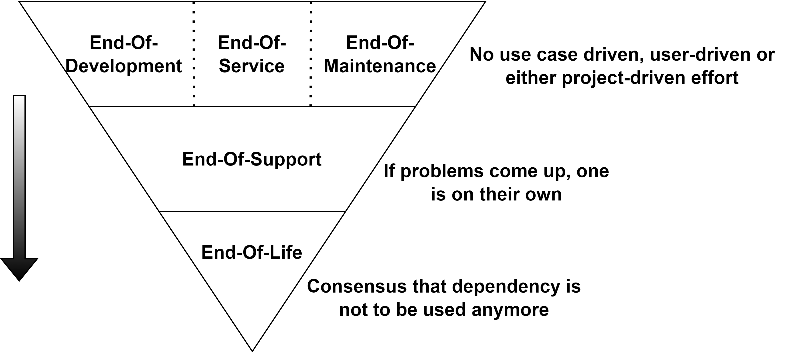
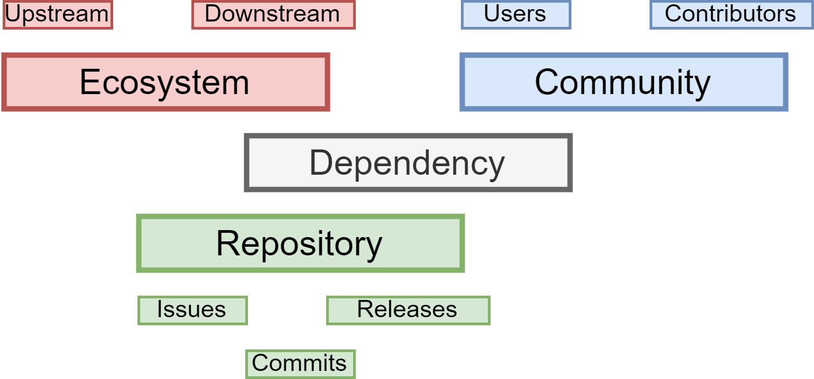
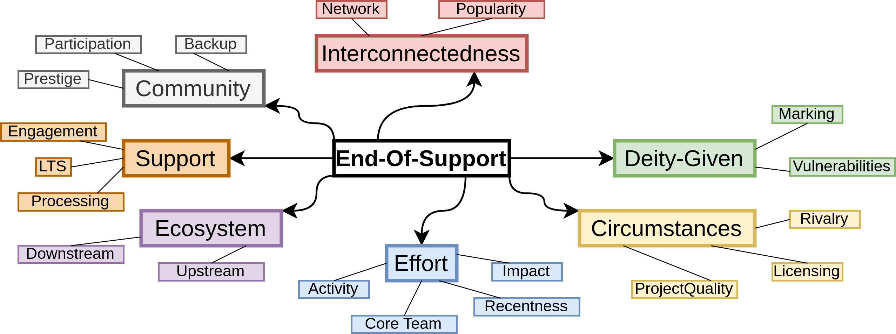
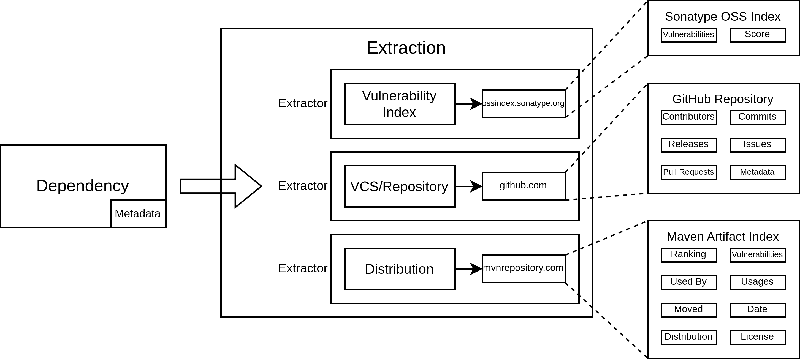
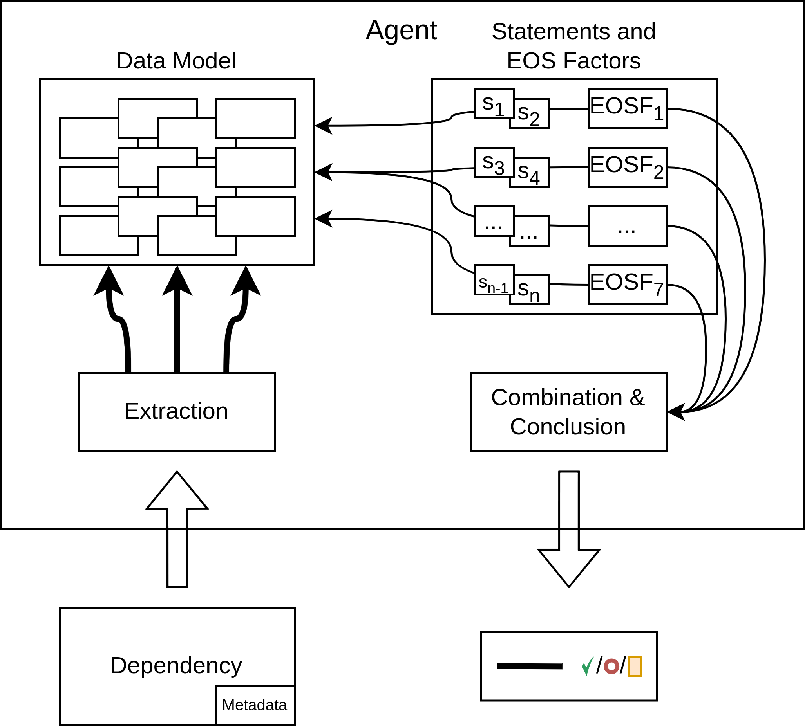
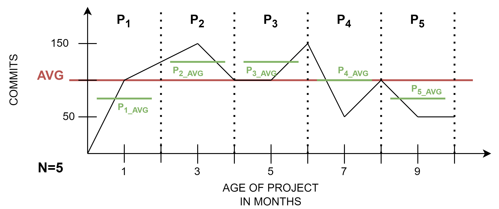

Construction of a software solution for detection of
end-of-support dependencies
Author Antonino Grasso (----)
Supervisor Prof. Dr. Johannes Ebke
Munich, March 2 2023
Hochschule München University of Applied Sciences
Department of computer science and mathematics
Device Insight GmbH
Declaration On Oath
I hereby declare that I have written the bachelor thesis
independently, have not submitted it elsewhere for examination purposes,
have not used any sources or aids other than those indicated, and have
marked literal and analogous quotations as such.
Surname, name
Location, date
Date of birth
Studygroup / WS / SS
Signature
Abstract
End-of-support dependencies within software development facilitate
risk and expense for development teams and project management. Within
open source developed software, end-of-support and its informational use
is a less established concept. This work elaborates and proposes a
theoretical concept of seven EOS Factors as core
characteristics of end-of-support dependencies within the EOS
Abstraction Framework and implements a software solution –
deprec – based on it, capable of detecting end-of-support
dependencies independent of projects, ecosystems, and information
sources. Leveraging information found in adjacent literature to the
end-of-support topic, the theoretical concept represents a framework of
abstracted information fostering abstracted and constant methodology in
a comprehensible and approachable way. Before implementation, a
requirements analysis was performed and a technical concept designed
according to elaborated requirements. Evaluation of the implementation
demonstrated that classifying dependencies as end-of-support by
combination of EOS Factors is a promising approach bearing
acceptable accuracy, although the evaluation set is not representative
and the implementation focused on feasibility and practicability.
Concluding that deprec has its use in practice, the software
development landscape can benefit from using deprec to gain
insights into the end-of-support status of dependencies and leveraging
its informational use to reduce risk and expense in further
development.
Introduction
Open-source software plays a major part in software development. An
open-source security and risk analysis report shared by Synopsys’
Cybersecurity Research Center1 for 2022, resulted in 97
percent of 2,049 analyzed codebases across 17 industries depending on
open source, with 78 percent of code being open source (Synopsys
2022). The same report states: “open source is the foundation for
every application we rely on today”, with the tendencies of using open
source steadily rising (Synopsys 2022). Clearly, as
why should one spend resources developing already existing software,
i.e., reinventing the wheel, if someone else went through it already.
However, using open-source software written by others within one’s
project, without thinking about consequences and implications regarding
security and stability, is not recommended either. Open source must be
carefully selected for one’s project and carefully maintained within the
same without jeopardizing future development (Larios-Vargas et al. 2020,
1). Other than commercial software where responsibility of
reliability is offloaded to the respective company, open-source software
requires different techniques to manage ((Synopsys 2022, 20); (J. Wang 2012,
369)) and must be maintained in projects by development teams
themselves: awareness of component’s security and stability status,
applying patches and bug fixes, updating to newer versions, or replacing
them altogether. To be noted though, as the Synopsys Analysis Report
(2022,
11) put it: “open source itself does not create risk, but its
mismanagement does”.
Problem and Motivation
Open-source software used in projects, hereinafter referred to
generally as dependencies, become a problem that has to be
taken care of if they are to lose support and no longer being
maintained, not receiving bug fixes, updates, and patches. The Synopsys
Analysis Report (2022, 19) states that 88
percent of examined codebases contained open-source software with no
feature upgrades, no code improvements, and no security issues fixed in
the past two years. They further conclude that said open-source software
more likely was no longer maintained and thus falling into the
aforementioned problematic category, hereinafter referred to as
end-of-supportdependencies. Research done in the
literature on open-source software supports this view: open-source
software projects, though, can be long-lived, are eventually abandoned
((Khondhu,
Capiluppi, and Stol 2013); (Capiluppi, Lago, and
Morisio 2003, 9, 10); (Coelho and Valente 2017)).
Elaborating further, projects where end-of-support dependencies are
detected, as the latter fall out of date without updates and
maintenance, the former face compatibility and stability issues with
either other of their dependencies, their codebase, or both.
Furthermore, Common Vulnerabilities and Exposures (CVEs) emerging for
any of those dependencies will remain vulnerable to abuse without
security updates, further risking security-related issues. Which in turn
would jeopardize project stability or foster to compliance issues.
From the perspective of dependency management, end-of-support
dependencies pose the general risk of demanding immediate attention to
at the very least decide how to proceed further and, in the worst case,
to be replaced immediately. If happening at a particular bad timing,
throwing the planning of the project overboard. The longer
end-of-support dependencies stay unrecognized, the higher the risk and
expense of dealing with consequential problems; the sooner they are
recognized, the better are risk and expense integrable in planning,
resulting in better managing possibilities.
Up to now, dependencies without support are discovered to a large
extent only if they are checked manually or causing problems. Without
occasion, however, dependencies loosing support usually remain
undiscovered (Bogart, Kästner, and Herbsleb 2015,
3). Although there exist solutions to automate updating
dependencies or for security assessment of dependencies, there is no
prophylactic approach to specifically reduce risk and expense dealing
with dependencies loosing support ((Xu et al. 2020, 780); (Y. Wang et al. 2020,
1)). Within software development, there were no existent entities
found, maintaining a database providing reference for development teams
and providing insights about dependencies and their end-of-support
status. Since the definition of end-of-support and when a dependency
should be considered as such varies depending on the project context,
and no common approach has been found on how dependencies should be
considered as end-of-support, there is a lack of reliable and
context-independent automated dependency analysis in the software
development landscape that focuses on the reliability of dependencies in
terms of end-of-support ((Xu et al. 2020, 780); (Y. Wang et al. 2020,
1, 4)).
Methods and Approach
As the approach of automated end-of-support dependency detection is
to some degree novel in the software development landscape, it is
necessary to build a theoretical conception of classifying dependencies
as end-of-support to function as core functionality of the software
solution. Following a solid theoretical concept, to design and implement
a software solution within the scope of this work, a requirements
analysis is necessary.
With a theoretical basis of the core functionality and set
requirements, a software solution is conceptualized that can
automatically detect end-of-support dependencies, hereinafter referred
to as under the title deprec. Considering the concept and
respecting requirements, deprec is implemented, presented and
further discussed its technical possibilities and limitations as well as
evaluated regarding its usability.
Conception of a Theoretical Basis
This chapter addresses the field of open-source software, open-source
dependencies, dependency management and development insights, extracting
knowledge in regard to helping to define the domain of end-of-support
dependencies. Further, making use to set the playing field for further
proceedings by defining the classification by which dependencies are
classified and the approach to classifying them.
Validating the
Necessity for a Novel Approach
To set the ground for a theoretical basis of classifying dependencies
as end-of-support, it was important to validate that the approach of
end-of-support dependency detection is novel and to justify why it was
necessary to elaborate a theoretical basis for it.
Part Zero:
Non-existent Solutions
Taking a step back, before looking at the status quo in terms of
end-of-support, existing solutions with the broad task of analyzing
dependencies can be evaluated whether they cover the informational use
of end-of-support dependencies.
Tools evaluated were software composition analysis platforms such as
(a) OWASP’s DependencyTrack2 or (b) Synopsys’ Black
Duck SCA3 and (c) open source
RenovateBot4 capable of universal automated
dependency updates.
Considering DependencyTrack and Black Duck SCA, both tools rather
focus on identification and managing of security or quality risks such
as licensing and vulnerabilities, and components being out-of-date or
modified. Though dependencies may be identified as out-of-date, the
domain of end-of-support is far greater than the issue of whether a
dependency has a newer version. In a project that has existed for more
than 15 years, most dependencies can be considered as out-dated.
Nevertheless, this circumstance is no guarantee that dependencies or
technologies can no longer be used and are no longer supported. Though
updating dependencies in and of itself can be seen as prophylaxis to
avoid risks with out-dated dependencies, it is not sufficient for the
end-of-support domain. With which, on this note, rendering RenovateBot
neither fitting for the end-of-support domain and its informational
use.
In summary, there is a lack of tools that provide information about
the status of dependencies, and more specifically, whether they can
continue to be used going forward apart from vulnerabilities or
outdatedness.
Part One:
Elusive Establishment
End-of-support as a concept is no new creation. It is well-defined,
established, and applied in commercialized software like the adobe
suite5 or big names in open-source
software6 which have a certain position apart
from what is focused on in this work. They rather fall into the category
of software that is used as tooling or standalone rather than as
dependency.
Organizations, capable of controlling what happens with their
commercialized software and when it does in a centralized way, clearly
communicate if and when their software has reached its end-of-support.
They do so because the end-of-support status of standalone software has
its informational use established. Considering that updating standalone
software is less complicated and error-prone than updating dependencies
interconnected within a project, its users are enabled to continue using
their software and updating it, without the uncertainty of issues being
fixed, problems being dealt with and support being provided.
With open-source dependencies, though, the modus operandi is vastly
different. Due to development teams managing the handling of their
dependencies themselves, they do not tend to dedicate much time to
assessing dependencies if they are of no concern, let alone if they are
about to lose support. Development teams rather focus their limited time
on more prevalent issues such as performance and operations ((Y. Wang et al.
2020); (Bogart, Kästner, and Herbsleb
2015); (Pashchenko, Vu, and Massacci
2020)). Following that, dependency management for the most part
consists of problem-solving rather than problem prevention, though to
some degree updating dependency versions can be considered as such.
Nonetheless, due to the shifted focus on problem-solving, established
approaches in dependency management are issue-focused. This fact leads
on to why tools, though existing and enabling development teams to
advance their dependency management, none of them cover the
informational use of end-of-support status of dependencies.
Concluding that end-of-support and its informational use for
open-source dependencies is not well established, and its application
fragmented at best, it has been elusive to serve as is in defining a
theoretical basis for classifying dependencies as end-of-support.
Part Two:
Inconclusive Approaches
A direct consequence of the non-well-establishment of informational
use of end-of-support status of dependencies is the even
less-established practice of assessing dependencies as such and,
therefore, approaches to do so become inconclusive. Leading with the
fact that literature covering this topic is limited to non-existent
(Valiev,
Vasilescu, and Herbsleb 2018, 645), developers are set off on
their own. Excluding dependencies where effort is explicitly made to
communicate them as end-of-support7, developers interested
in the informational use of end-of-support status of their dependencies,
have no choice than to assess themselves whether they think a particular
dependency is supported or not. By which characteristics and methods
developers would do that in detail can only be assumed, but vary from
developer to developer (Larios-Vargas et al.
2020).
It can be concluded: subjectivity enters into the assessment. Where
this is the case, the latter varies depending on the developer’s
experience, and the outcome of the assessment takes on a fluid
character.
Part Three:
Non-Triviality
Looking into detail of dependencies where their developers clearly
communicated them as end-of-support, factors that would precede onto
that can be extracted. Such factor would be the release cycle that would
have been suspended. For example, log4j8 has
been abandoned since 2012 (i.e., no releases since 2012) in favor of its
successor. Though had its official end-of-support announcement9 not until 2015, leaving a gap of
three years without a release before the official announcement.
Following that example, one could extrapolate the fact that a
suspended release cycle results in the fact that the dependency has lost
support. This, however, turns out to be not the case for the subset of
feature-complete dependencies. A survey conducted by Coelho and Valente
(2017) had their interviewees answering, as to why their project
had no activity in the last year, that their projects were considered by
them as done. Valiev, Vasilescu, and Herbsleb
(2018, 647) describes them appropriately: “[feature-complete
libraries] continue to deliver their intended use without active
maintenance” – though to be noted, differentiating between ’active’ and
’passive’ maintenance varies between projects and cannot be generalized.
In addition, the sturdier a base the dependency is built upon, the less
maintenance does a dependency need (Coelho and Valente 2017, 9).
Dependencies requiring no maintenance and no features to be added
would warrant a suspended release cycle, but not necessarily to be
considered as end-of-support. The ’owasp-java-encoder’ project10 gives an example of this
indication. Its last release was in 2020 (two years ago as of this work)
but is passively maintained by its developers. Concluded by following
key points: low-maintenance and niche project, maintenance commits since
last release, non-lingering issues and organization-backed.
A suspended release cycle leads onto possible misinterpretation of
feature-complete dependencies as end-of-support. Considering sufficient
project activity supports in differentiating, though varies between
projects. In addition, project activity in and of itself can be
concluded as sufficient, depending on more detailed factors: commit
activity indicating maintenance, though again, maintenance could consist
of updating dependency versions or minor adjustments to the project;
handling user-related issues contraindicating abandonment; and so
on.
The point is that dependencies cannot be assessed as end-of-support
as is, without doing so in a non-comprehensible and non-constant way.
There are many ambiguous characteristics that speak for and against,
influencing each other and functioning differently depending on the
project and its context. In addition, different developers can share
different views and can make different claims based on differing
perspectives (Valiev, Vasilescu, and
Herbsleb 2018, 645). All in all, the assessment of whether a
dependency is end-of-support is not a trivial matter.
Concluding Remarks
In summary, any software developed based on elusive-established
concepts and based on inconclusive approaches, that attempts to find a
way through dense and entangled information will not stand up to the
demands of practice. What is necessary, is a basis that allows for an
abstracted and constant methodology to classify dependencies as
end-of-support in an approachable and comprehensive way. The theoretical
concept proposed hereinafter introduces a holistic approach to
classifying dependencies as end-of-support with abstracted concepts
based on previously conducted research and evaluations in thematically
adjacent literature as well as established concepts therein.
End-of-support Dependencies
Decentralized and collaborative development is common for open-source
software. Oftentimes under the wings of an organization, but not less
often developed by independent developers. End-of-support takes the
place in that this decentralized and collaborative association of
developers no longer invests resources in the development and
maintenance of such a dependency. Especially issues, CVEs and bugs are
not handled nor fixed.
End-of-support though is not a symptom of decommissioning open-source
software, rather the result of it. In the process of decommissioning
open-source software, similar predicates can be used to describe
different characteristics of an open-source software project soon to be
decommissioned. [fig:eox-funnel] depicts the
differentiation of end-of-support from other similar predicates:
End-Of-Development/-Service/-Maintenance
These terms define that either, in sequence from left to right, use
case driven, user-driven or project-driven effort is no longer present
in an open-source software project.
Under use case-driven effort falls regular development to advance a
dependency in its use case: e.g., adding features, enhancing
performance, providing utility. User-driven effort is everything
triggered by the dependencies users: e.g., implementing requested
features or providing support for users’ issues. Tasks that are
necessary for a dependencies’ continuation are associated with
project-driven effort: e.g., fixing issues or CVEs, or regular
maintenance like updating dependency versions and keeping the project
itself tidy and up-to-date.
End-Of-Support
End-of-service, end-of-development and end-of-maintenance precede the
predicate of end-of-support, whereas the former to a degree is a
sufficient, and the latter two are a necessary condition. They are not
to be seen as strict requirements though, that if one or a combination
is satisfied, a dependency wanders on to the domain of end-of-support.
The aforementioned subset of feature-complete dependencies, under
particularly opaque circumstances, can satisfy all of them, without
necessarily satisfying end-of-support. The node module ’st’11 gives an example of this. Its
repository is inactive as of May 2021 and satisfies all three
predicates, but the according package on its registry12
has 350 thousand weekly downloads. One could argue that with such
numerous users and such a small project, problems of any kind are rather
unusual, but they would be fixed.
End-of-support is paraphrased as the following: if problems arise,
one is on their own. The leading question is, when assessing
dependencies about their end-of-support status, whether one can expect
of problems to be taken care of. Problems of any kind, be it bugs,
issues of any kind, feature requests, and especially CVEs. A dependency
being end-of-support implies two scenarios for development teams using
said dependency: On the one hand, taking over maintenance and taking
care of the dependency themselves, be it only for themselves or publicly
(Larios-Vargas et al. 2020, 6,
7). On the other hand, being forced to replace the dependency
altogether.
End-Of-Life
End-of-life is a rather special case, what differentiates it from
end-of-support is the broad consensus about a dependencies state and its
diminishing use. Its use case to labeling dependencies as such, if not
officially disclosed, is rather concentrated on old dependencies, as
those are less complicated to be labeled as end-of-life.
Though, for this work and its intentions, end-of-life does not bring
more informational use worth pursuing than end-of-support does. From the
view of dependency management, for example, the important question is
whether one can continue using a specific dependency rather than being
forced to update or replace altogether. To answer this question,
assessing a given dependency about its end-of-support status is
sufficient, voiding the need of further assessing if the given
dependency also is considered as end-of-life.

Figure 1: End-Of-X Funnel
Classifying
Dependencies as End-of-support
With end-of-support set within the context of open-source
dependencies, the next step is to elaborate the approach of classifying
dependencies as end-of-support. By mimicking how developers approach
dependencies about suitability, reliability and sustainability, and
incorporating insights about dependencies projects, a new approach is
distilled with which dependencies can be classified as
end-of-support.
Defining Information
Primary literature on end-of-support of open-source dependencies was
difficult to find, and certainly did not address approaches to
classifying dependencies as end-of-support. To bypass close to
non-existent literature that could have been fully relied on, it was
necessary to approach the matter differently.
By reviewing literature that is thematically close, useful
information was collected for the theoretical concept that would serve
as the information base for classifying dependencies as end-of-support.
The literature reviewed, fundamentally covered the following topics:
open-source software, open-source dependencies, dependency management
and development insights. With guiding questions written down in [fig:guiding_questions],
existing interviews and surveys, qualitative and quantitative research,
and empirical evaluations were consulted. To be noted, ’library’ used in
referenced literature is to be equated with ’dependency’.
D1. How do developers choose a library?
—
R1. What determines the survival and sustainability of libraries?
Leading question D1 was split into two parts that were of
interest for further use: Where do developers search for information and
what kind of information are they looking for? D1 was important
as assessing dependencies as end-of-support requires information
gathered from somewhere and the same used somehow, having initial
indications and directions was beneficial towards that task.
Place number one to search for information about a dependency is where
it is developed. Source code repositories are the place where developers
search first to gather information and consider whether a given
dependency fits or not. Pashchenko, Vu, and Massacci
(2020) had their interviewees answering source code repositories
as their primary information source, as the latter is not only focused
on a dependencies source code in and of itself, but also provides useful
information and metadata beyond that.
Although a dependencies’ repository is the place number one to browse
through first, Pashchenko, Vu, and Massacci
(2020) observed in their study that developers were less
interested in low-level details of the project’s source code and rather
referred to high-level information. They further state that their
interviewed developers indicated to mostly rely on community support of
a library. Therefore, high-level information investigated consisted of
popularity measures such as the user base of the library, activity
measures such as commit frequency or the number of open and resolved
issues and how quickly they were fixed, and the project’s
contributors.
Larios-Vargas et al.
(2020)
conducted a more in-depth survey about practitioners (i.e.,
developers) and how they select their libraries. Evaluating their
results, they grouped aspects received by practitioners into three
categories of factors: technical, human and economical.
Technical Factors
considered by practitioners in their survey were functionality,
quality of the development, type of project and release process. Since
the former three are less tangible for the use case of this work, only
the latter was considered in more detail.
Practitioners in their survey stated that characteristics associated
with a libraries release provide them indicators to predict for how long
a library will be alive. Active maintenance, long-term support, maturity
and steady evolution were characteristics evaluated in their survey.
Larios-Vargas et al.
(2020) summarizes that practitioners would assess said
characteristics by a variety of measures and in non-standard ways.
Active maintenance, for example, by volume of contributions, exploring
how regularly libraries were updated, observing if the most recent
release happened recently and assessing if contributors were actively
working on new features or fixing bugs. Further, long-term support would
be substituted by the libraries stability and maturity, examining the
volume of bugs identified per release, one practitioner introduced the
wording of ’getting enough momentum’ (Larios-Vargas et al. 2020,
5).
Human Factors
such as the libraries’ community and organizations partaking were
considered by practitioners. End-of-support related, both the just
listed were of interested as they act as central drivers behind a
library: according to practitioners, communities play a positive and
influential role. They include the group of users who adopted the
library in their projects and the group of developers maintaining and
providing technical support for the library. Practitioners considered
the popularity of a library or its contributors partaking in the
project, to assess its community and whether it was active or not.
Popularity would be measured by practitioners, for example, by number of
downloads. Contributors were paid attention to, whether they were
actively engaged in the project, their responsiveness to issues or what
their experience was with the library. Organizations behind a library
would let practitioners perceive trustworthiness of the library,
associating it with lower risk.
Economic Factors
are considered crucial by practitioners to also be evaluated. Total
cost of ownership was proposed in their study and consisted of the
libraries license and the maintenance costs and risks associated with
using a library. Practitioners cited licensing to be a crucial factor:
“if I need to apply a security fix, it would be nice if we can change it
ourselves” (Larios-Vargas et al. 2020,
8). Licensing prohibiting change by its users coupled with
lacking sufficient release cycles would be reason for practitioners to
avoid a library.
Regarding Human Factors, Pano, Graziotin, and Abrahamsson
(2018) had their interviewees supporting the importance of the
community of a library, and also concludes “the community [being] the
heart of an open source project” (Pano, Graziotin, and Abrahamsson 2018,
20). The better responsiveness of the community, the larger its
size, the bigger and more prevalent its user base and how active the
community is would favor their analyzed frameworks in being
adopted.
Summarizing Pashchenko, Vu, and Massacci
(2020), Larios-Vargas et al.
(2020) and Pano, Graziotin, and Abrahamsson
(2018), developers used information when selecting a library
about (a) the libraries’ project activity and
(b) the libraries’ community. Whereas, information
considered under (a) highlights whether a given
dependency is reliable now, information considered under
(b) highlights whether a given dependency will remain
reliable going forward.
Answering R1: What determines the
survival and sustainability of libraries?
Other than D1, leading question R1 focuses entirely
on the domain of libraries themselves. The idea of R1 was to
analyze characteristics of surviving and sustainable libraries and their
associated repositories, to derive what contraindicates the assessment
of dependencies as end-of-support.
Ahead, what drives the survivability and sustainability of a library
and its repository is simple: contributor effort. As open-source
projects live by their users’ contributions, be it participation or
development, a lack of effort will drive a library eventually into
abandonment. Though this being the case, what brings in more complexity
is the question of how different factors and characteristics of a
library itself or its repository influence contributor effort.
What is considered by contributor effort is, for example, from the
view of developers, development activity such as commits or releases,
support activity such as handling issues or fixing bugs and maintenance
activity such as updating dependencies. From the view of the libraries
users, for example, partaking in discussions, generating traffic about
the library or reporting issues.
According to Coelho
and Valente (2017) that analyzed systems no longer under
maintenance by interviewing their developers, among characteristics of
failing libraries, one of the prevalent reasons for abandonment was lack
of time or lack of interest. As open-source projects live by their
users’ contribution effort, both would result in declining project
activity. Following that, commit and release activity would decrease,
issue handling and support provided would plunge, and maintenance
activity would stop. In addition, interviewees further stated being
usurped by competition or becoming obsolete as to why their projects
were abandoned. Both would result in a similar situation of declining
project activity, though, warranted as further effort would be
voided.
Coelho and
Valente (2017) further states that projects with low
maintainability and based on outdated technology face abandonment by
their interviewees. By arguing that high-maintenance libraries claim
more resources than low-maintenance libraries and low maintainability
and outdated technology would warrant the former, libraries face a
higher risk of being abandoned. They cannot generate enough contributing
effort to deal with their higher maintenance needs.
Elaborating further, Valiev, Vasilescu, and Herbsleb
(2018) sheds light from a different angle, researching
ecosystem-level determinants of sustained activity. They analyzed
projects and their position in their ecosystem and relationships with
projects upstream and downstream, concluding that the size of downstream
dependencies, i.e., project dependents, are related to greater
probability of the projects’ survival. They reason that the larger a
project’s dependents, the bigger is the pool of potential contributors
the project can attract contributors from. Similar was partially
confirmed by them concerning organizations standing behind projects, as
organizations also present a pool of potential resources. Though, for
example, considering Comino, Manenti, and Parisi
(2007), licensing could have a toll on how successfully a library
can attract new contributors. As contributors usually emerge from a
user-standpoint, strong copy-right licensing can prevent potential users
to adopt a library (Larios-Vargas et al. 2020,
8), that would then count as loosing potential contributors.
Considering Coelho
and Valente (2017), project practices may also affect whether
users become contributors. They state open-source development or
repository practices like providing continuous integration, the project
having a README or LICENSE file, and availability of a project homepage
or guidelines for contributing, to be relevant.
From the point of view of how libraries assert their presence in the
open-source software landscape, the concept of established libraries can
be derived from Samoladas, Angelis, and Stamelos
(2010). The better they are already established in the
open-source software landscape, the harder it is to abandon them. Samoladas,
Angelis, and Stamelos (2010) backs establishment up with
prolonged activity and presence, proven value of the library, and a
sustainable community.
Moving onto the topic of a libraries’ community. Reciting Pano, Graziotin, and
Abrahamsson (2018) that “the community is the heart of an open
source project”, its influence on a project’s success is non-negligable.
Comino,
Manenti, and Parisi (2007) supports this, as they conclude the
size of a libraries’ community having non-linear impact on the
probability of success.
Elaborating further, preceding that a libraries’ community can be
characterized by the popularity of the library, and Dey and Mockus (2018)
providing insights into metrics used to predict changes in library
popularity, these metrics can be used to gain insights into what a
libraries’ community is influenced by. Dey and Mockus (2018) found the
activity of a library, e.g., number of releases and commits, and the
overall commitment by its users, to be the top predictors of change in
popularity. Among other predictors, worth mentioning, is the popularity
of upstream and downstream dependencies of a focal package. To be noted,
the number of downloads of a focal package was used to substitute for
its popularity.
Evaluating these findings, one could argue that the popular and
prestigious a library is in its ecosystem, the more supporting and
active is its community and the longer will it prevail. For example,
top-performers such as React13 or Vue14
are fundamental frameworks in web development, accordingly are their
communities established, and both frameworks will be used ever after. In
support, Borges
and Valente (2018) also highlights the measure of popularity and
summarizes that a projects’ popularity was influenced by whether it was
backed up by organizations or owned by established developers. Though,
the most discriminative features were project-related, such as the
recency of the last update and overall project activity.
Summarizing leading question R1, a libraries survival and
sustainability is kick-started by its repositories qualities and active
development attracting users and with it potential contributors. The
bigger the user base, the bigger its community. With a steady
contributing effort of evolving the library, the same gains popularity
and establishes itself in its ecosystem. From there on, retaining
contribution effort is key to survival and secured by active maintenance
and support. All in all, a libraries’ repository starts it, but the
libraries’ community keeps it going.
Categorizing Information
To provide an overview of information derived from consulting
literature about leading questions D1 and R1, [fig:info-landscape] depicts an
informational landscape that can be considered for the evaluation of
dependencies as end-of-support. In it are domains of information
sectioned where information can be categorized to.
Ecosystem
includes information about the dependencies’ ecosystem, such as a
ranking15 among similar dependencies or the
number of downloads. The domain further subjects Upstream and
Downstream subdomains, in which information about focal
dependencies up- and downstream is categorized. For example, the
popularity of dependencies and dependents of a focal dependency.
Community
contains information about a dependencies’ community, e.g., its
popularity or its size. Further, information about distinct contributors
or users is categorized into their responding subdomains
Contributors and Users. The former includes
information such as public repositories and their popularity, or what
organizations they belong to. In the latter is information categorized
such as a users’ participation activity.
Repository
accounts for the largest informational content and includes
information like the repositories’ owner, if the repository is backed up
by organizations or which license the repository subdues. Further,
dividing information into subdomains Issues, Commits
and Releases with according information related to the
subdomain.
Dependency
lastly includes all other information that cannot be explicitly
categorized into the other domains, for example, information about CVEs
of a dependency or if newer versions of the same dependency are
available.

Figure 3: Information Landscape of Dependencies by
Categories
Characterizing Informational
Value
After categorizing information into their domain, the same
information can be characterized in terms of its informational value
into two distinct properties: Signals and Metrics. To
be noted though that neither of the two is specific to a particular
information domain.
Signals
are one-dimensional interpreted pieces of information. Given the
following example: above is stated that organizations behind a library
would let practitioners perceive trustworthiness of the library,
associating it with lower risk. To utilize this insight, the following
signal can be derived: is a library backed up by an organization?
One-dimensional as a signal provokes the information to be either ’yes’
or ’no’, or other forms of the like. Whereby ’yes’ and ’no’ can be
interpreted independently and without further context, with which
Signals are considered as substantial information.
More Signals, for example, could be: (a)
was the last release within the last month?; (b) does
the repository have contribution guidelines?; (c) does
the repository have known (open) vulnerabilities?; or
(d) is the library copy-right licensed?
Metrics
are multidimensional interpreted information. Unlike
Signals, which are distinct, Metrics are continuous.
Given the commit frequency referenced before, which can take on a
variety of values, Metrics are not readily interpretable and
require further contextualization. For example, a commit frequency of
ten commits a month has a different informational value depending on the
projects’ momentum. For rather small projects that frequency is
sufficient as more is not needed to maintain it. Whereas, five commits
can be a day’s contingent for other (bigger) projects. In addition,
Metrics are not bound to be a statistical measure, but can also
be a qualitative measure, such as the quality of technical support given
by developers of a dependency.
More information to be considered as Metrics could be:
(a) release frequency; (b) average
time to close opened issues; (c) the average time for
developers to first respond to issues; or (d) the
popularity of a library.
Abstracting Information into
Statements
In the attempt to develop a comprehensible and approachable
theoretical concept, the use of information collected in [sec:def-information] in its
present form turned out to be too complex and fine-grained to deal with.
It was not reasonably possible to combine said information and weight it
against each other to classify dependencies as end-of-support.
Since developing a theoretical construct with information that is too
fine-grained would not be flexible enough for practice, an approach to
map the information landscape built in [sec:def-information] into more
manageable plots was considered. Therefore, this section proposes the
approach of abstracting the information in [sec:def-information] into
Statements.
Statements
as used in this work, are an initial abstraction mapping that shapes
information to facilitate handling, combination and trade-off in
classifying dependencies as end-of-support.
The following are Statements and their detailed composition
to be used in classifying dependencies as end-of-support, derived from
[sec:def-information] and
utilizing information and insights therein:
Project Quality
gives measures whether a dependencies project follows common
open-source practices such as providing a README or LICENSE file,
contribution guidelines, and templates. Though, also covering topics
like development practices such as adopting continuous integration.
Activity
of the dependencies’ repository is one of the most prevalent factors
contraindicating end-of-support. Arguing that a dependency cannot be
considered as end-of-support if its repository is sufficiently
active.
The leading question of Activity is whether activity in the
dependencies repository contraindicates end-of-support.
Activity concerns topics like development and maintenance
statistically. To assess stated topics, information mapped is foremost
from the Repository domain and its Commits,
Issues, and Releases subdomains. More detailed,
Activity can utilize, for example, commit and release frequency
and how many issues the repository receives. As Activity
concerns information statistically, further contextualization, for
example, how recent activity happened, is not considered.
Impact
similar to the Activity statement, covers the
Issues and Releases subdomains, but assessing whether
recent activity was impactful. Impact serves the purpose of
measuring the impact of change by evaluating whether recent activity
brought change to the repository, assisting in differentiating, for
example, between projects in development and maintenance.
Differentiating, for example, between feature commits or automated
dependency updates. Projects such as the former, with predominantly
impactful frequent activity, are to be considered differently than
projects such as the latter, with predominantly lesser impact frequent
activity.
Recentness
focuses on the question if the repository has gotten updated
recently. It utilizes information mainly from the Repository
domain, specifically the Commits and Releases
subdomains. A recently updated, especially recently released dependency
is contraindicating end-of-support.
Processing
is the next Statement proposed. The gist of it is to state
whether a dependencies repository provides support to its users,
contraindicating end-of-support.
The leading question for Processing is whether a repository
processes its issues and evaluating how issues are handled. By tapping
into information from the Repository domain, specifically the
Issues subdomain, this Statement concerns the support
topic and whether provided support can be considered as qualifying. In
detail, Processing can utilize information such as the closing
time of issues and how efficient the repository keeps their issues in
check.
Engagement
like Processing uses information from the Issue
subdomain, but differs in the sense that, apart from Processing
concerning whether issues are processed, it assesses whether
specifically not closed issues are engaged with by the repositories
contributors or not given any attention at all. Issues not being closed
but actively discussed contraindicate end-of-support, with which
Engagement somewhat functions as a counterweight to
Processing.
Core Team
addresses whether a dependency and its repository has dedicated
contributors. Using the Repository domain and information about
the activity of contributors via the Commits subdomain,
Core Team assesses whether the repository has a strong enough
team to keep the dependency afloat.
Vulnerabilities
indicates whether dependencies have associated vulnerabilities,
especially CVEs, and if those vulnerabilities have been fixed or not. On
one hand, existing but fixed vulnerabilities would indicate maintenance
and support, on the other hand, not fixed vulnerabilities and for how
long they are known, especially CVEs, would indicate towards
end-of-support.
Backporting / LTS
deals with the question if the practice of back porting is observable
in a repositories’ development. Meaning that developers also patch major
issues and especially CVEs into past versions of the dependency. The
term ’long-term-support’ is used for such versions treated with higher
priority. The purpose of this Statement is to differentiate
when classifying a dependency as end-of-support and the former is not
considered as the latter, whether the same applies for a specific
version of said dependency.
Rivalry
describes a dependency of contextual competition it faces. For
example, whether newer versions of the same dependency are available or
alternative dependencies covering the same use case and how popular
those are. The purpose of this Statement is to assess how broad
the possibilities are for users to replace the dependency.
Popularity
measures just that: how popular is a dependency. Possibilities to
utilize different substitutes for popularity, as also used in
literature, are, for example, downloads or how many projects the
dependency is used by. The PopularityStatement,
though, has no specific domain it utilizes information from.
Network
as Statement has its purpose to measure how networked a
dependency is. Meaning how many connections a dependency has, be it to
other dependencies, dependent projects, contributors, organizations and
so on. The background for this Statement is that one connection
could be a possible resource the dependency can use, arguing that bigger
and more prevalent dependencies have more connections going outwards
than smaller ones, and, therefore, a higher possibility to sustain.
Upstream
evaluates the upstream context of a dependency about disadvantageous
characteristics. The gist of Upstream is that, as an extreme
example, if a dependency itself uses end-of-support dependencies, the
higher the probability that the dependency itself is end-of-support.
Downstream
similar to Upstream, evaluates the downstream context of a
dependency. Arguing that if a dependency is used by many dependents and
those are being active themselves, the higher is the dependencies chance
of not becoming end-of-support. The bigger the number of dependents, the
bigger the possible resource pool as numerous depend on it.
Backup
discloses information about how strong a dependency is backed up by
utilizing the Repository and Community domain, and
information like organizations or sponsors therein. The more backed up a
dependency, the higher the chance of survival.
Prestige
provides insights about the contributors of a dependency. Differences
can be found on projects with core contributors who have a certain
prestige, i.e., backed by organizations, sponsored, high overall
activity, and projects with contributors voluntarily contributing in
their spare time. Prestige gives a measure to that. Arguing
that dependencies being developed by prestigious contributors have a
higher chance of surviving than those without, Prestige can
indicate towards higher probability of support to be expected.
Participation
looks into how active the dependencies users participate in its
project that is specifically not development or maintenance related.
Participation considers, for example, user activity in issue
discussions. Its purpose is to further assess the dependencies community
and how active and engaged its users are.
Marking
considers preliminary factors that explicitly consequent the
dependency to be classified as end-of-support. For example, if the
dependencies developers officially disclosed their dependency as
end-of-support via official channels, the project’s homepage, or
somewhere stated in the repository.
Licensing
covers the beneficiality of a dependencies licensing if a situation
occurs that given users have to fix their dependency themselves. Though
that this Statement cannot independently indicate towards
end-of-support, it influences the classification of a dependency as
end-of-support. It follows the argument that restrictive licensing
hinders the adoption of a dependency and the potential of another party
taking over maintenance. The latter may be the case if the dependency is
no longer maintained and support from its original developers is
lost.
The EOS Abstraction Framework and EOS
Factors
Statements, introduced in 2.3.2,
enable the theoretical concept of classifying dependencies as
end-of-support to be based on more abstract and constant information.
Further, subdividing Statements into distinct factors
representing core characteristics of a dependency in terms of
end-of-support, proposed in this work as EOS Factors, leverages
the theoretical concept into a more comprehensive and approachable one.
Finally, the framework for classifying dependencies as end-of-support
referenced in this work as EOS Abstraction Framework is
proposed as the core of 2. The
EOS Abstraction Framework utilizes aforementioned EOS
Factors and enables combination, trade-off, and conclusion of
information to classify dependencies as end-of-support.
EOS Factors
utilize the informational value of Statements, combining
them and setting them into relation. Following are the seven distinct
EOS Factors used further in this work to classify dependencies
as end-of-support:
Effort
characterizes a dependency about how much momentum a dependency has.
Key Statements are: Activity, Core Team,
Recentness and Impact.
Support
characterizes a dependency about how much support a dependency
provides to its users. Key Statements are: Processing,
Engagement and Backporting / LTS.
Ecosystem
characterizes a dependency about its ecosystem and whether beneficial
and advantageous factors are given. Key Statements are:
Upstream and Downstream.
Community
characterizes a dependency about its community and whether the
dependency could rely on it to receive sufficient ’drive’ to survive.
Key Statements are: Backup, Prestige and
Participation.
Interconnectedness
characterizes a dependency about its integration and establishment in
the software development landscape. Key Statements are:
Popularity and Network.
Circumstances
characterizes a dependency about different factors influencing the
classification of a dependency as end-of-support. It functions as a
general collection basin for Statements that are not used
elsewhere. Key Statements are: Licensing,
Rivalry and Project Quality.
Deity-Given
characterizes a dependency about preliminary factors indicating
end-of-support, which would void further assessment. Key
Statements are: Marking and
Vulnerabilities
The EOS Abstraction
Framework
functions as a framework within where EOS Factors can be
used to classify dependencies as end-of-support. [fig:eos_abstr_framework]
summarizes Statements and EOS Factors and sets them in
relation to each other, depicting the domain of the framework. Further
implementation based on it is open to modification of how individual
EOS Factors are handled. Meaning by that, the EOS
Abstraction Framework does not prescribe that, for example,
Community and Ecosystem in their informational value
have to be evaluated together with a 2:1 ratio. The EOS Abstraction
Framework much more acts as an enabler, enabling
individual utilization and policies to assess dependencies as
end-of-support in a more approachable and comprehensive way, rather than
enforcing predefined rules or interrelationships not being able to
adjust to different situations.

Figure 4: The EOS Abstraction Framework: Utilizing EOS
Factors
Requirements Analysis
In advance of designing and implementing a software solution,
presenting general conditions and use cases, and analyzing requirements
for the same is a vital step to establish a foundation to be built upon.
The goal of this chapter is to define requirements for a software
solution detecting end-of-support dependencies. To be noted is that the
analysis is done within the context that the software solution
implemented in this work cannot finally cover everything there is to
cover within such a large and differentiated field of dependencies.
Requirements discussed are designed under the premise so that the
software solution can remain persistent and be extended even after this
work.
Ahead, conditions and use cases are catered towards the use of the
software solution within the software development department of Device
Insight, which this work is supported by. The same applies for set
requirements, which were internally discussed within the same
department.
General Conditions and Use Cases
The foremost use case is to be able to analyze dependencies on a
project-based scope. Since projects can contain many dependencies, it
becomes tedious from a dependency management standpoint to analyze each
dependency individually.
Furthermore, dependencies to be analyzed, concern projects from the
application and web development domain. This is set, as dependencies
used within the software development department of Device Insight mostly
come from these domains. Though possible to analyze dependencies from,
for example, docker containers16 upon the base of
trivy17, this not primarily focused on.
Integrating the software solution into Device Insights software
development department is planned within continuous integration
pipelines. Whereby results are valued over performance, as the need to
run end-of-support dependency analysis for projects is rather
infrequent.
Requirements
Project Independence
Crucial for the usability of the software solution is the possibility
to use it independently of any project and context. Therefore, the
software solution should enable agnosticism of ecosystem, programming
language and build tool. In other words, the tool should be able to work
with any kind of dependency in any project.
As the landscape of software development is very broad, so are
distinctly different dependencies in use. The overarching purpose of
this requirement is to ensure agnosticism without demanding all kinds of
dependencies being covered from the get go.
Data Independence
Consequential to is the need for the software solution to be able to
work with information from differing origins. This requirement ensures
that the software solution functions data origin agnostic. Since
different projects utilize different dependencies, which in turn have
different data origins, fetching information from one central data
origin covering all kinds of dependencies is not possible. For example,
developing an application in the NPM18 ecosystem opens the
door to pulling information from npmjs.com. For applications
developed with Maven19, for example, this is not possible.
Instead, information regarding the Maven ecosystem can be fetched, for
example from mvnrepository.com.
In addition, following from the agnosticism of data origins, the
software solution has to be able to handle either missing or low-quality
data. Depending on the dependency, there is sometimes less and sometimes
more information to be obtained. Furthermore, the same applies to the
quality of the information. Following that, this requirement further
ensures that the software solution has to work with whatever data is
available for a given dependency. Though, it should be clear that by
above stated, any strict requirement of accuracy or validation is
voided. As the software solution has to be able to work with altering
and optional data origins, information fetched from said sources to be
evaluated on either informational correctness or reliability is not
demanded.
Similar to , the overarching purpose of this requirement is to ensure
data agnosticism without demanding to cover all kinds of dependency data
origins from the get go.
Expandability
To round out the previous two requirements, the software solution
must be designed to ensure expansion of dependency domains and thus data
origins. This requirement ensures that the software solution is
implemented so that, for the beginning, a limited set of dependencies is
supported, but being expandable to support not yet supported
dependencies. For example, initially supporting dependencies from the
Maven ecosystem, but being expandable to also support dependencies from
the NPM ecosystem.
Integrability
The requirement of has the purpose to ensure that the software
solution can be used under different premises. For example, to be used
as a command line interface tool, or be provided as a service. Depending
on the use case, having the possibility to choose how one integrates the
software solution into their workflows is nothing short of beneficial.
However, this requirement does not state to integrate the software
solution into different premises initially, though to ensure
integrability and to evaluate a suitable integration.
Out Of Scope
The software solution presents an implementation of a theoretical
concept elaborated for the first time in this work. Given this
circumstance, the software solution and its assessment of dependencies
as end-of-support is more focused on feasibility and practicability.
How successful and accurate dependencies were assessed takes on a
secondary role. Therefore, the requirement of the software solution to
guarantee correctness of the assessment to its users is not in the scope
of this work. Nevertheless, evaluating the implementation against an
evaluation set of dependencies is necessary to ensure that the proposed
direction is not misleading.
deprec | Technical
Conception
This chapter goes in-depth about designing a software solution for
automated project-based end-of-support dependency detection –
deprec. Presented is its technical conception along with the
utilization of the EOS Abstraction Framework proposed in 2.
Working with Software Bills of Materials
Deprec has to handle different dependencies with differing
conditions. Be it what ecosystem they are developed for, or where and
how they are distributed. To be able to work with various dependencies
and to fulfill requirement , a common ground for dependencies was
needed. Software Bills of Materials (SBOMs) were chosen as input of
deprec, to base the end-of-support dependency detection on.
SBOMs20 are a standardized inventory of a
project’s components with information about the same, used in software
development and supply chain, asset and vulnerability management.
Focusing on dependencies, SBOMs provide information about the supplier,
name and version, unique identifier and relationships to other
dependencies (transitive dependencies).
Further, SBOMs operate ecosystem, language and platform independent,
suitable for deprec’s use case and functionality.
Conceptualizing deprec on top of SBOMs as input offers built-in
standardization and allows for achieving the requirement in full
length.
Eligible Standard
Since SBOMs in and of itself is solely a defined concept, different
standards exist. This section raises requirements for an eligible
standard and substantiates a suitable standard to be used for
deprec going forward:
(i)
Foremost, as SBOMs will function as input of deprec, the
same cannot be used without an SBOM at hand. Therefore, it has to be
easily possible to produce SBOMs for any given project. Following that,
the eligible SBOM standard requires offering various supported tools
accommodating different projects to be able to generate SBOMs for
them.
(ii)
Moreover, since projects can utilize different versions and artifacts
of the same dependency, deprec needs unique and identifying
information associated with a dependency.
(iii)
Finally, the eligible implementation of a SBOM can provide a broad
information spectrum about a dependency to be leveraged to fetching
information from data sources.
The Software
Package Data Exchange (SPDX) standard
21, though satisfying the minimum SBOM
standard, is rather inconvenient for this use case. The leading idea of
SPDX, maintained by the Linux Foundation and its contributors, is to
enable data exchange of open-source dependency information. Information
about identification, due diligence, and analyses and resulting insights
that is rather performed independently by organizations, to be collected
and shared in a common format.
Elaborating further, SPDX does not offer easily readable data formats
such as JSON conveniently and is not conveniently to be integrated into
deprec. In addition, information provided22
by the standard is not detailed and broad enough to be used to
satisfaction, missing fields like cryptographic hashes for distinct
artifacts.
OWASP’s CycloneDX standard
23, on the other hand, offers better
capabilities to be integrated into deprec. It focuses more on
security and vulnerabilities, providing information about dependency
identities themselves and less about exchange between entities. The
standard offers detailed and distinct information about dependencies,
such as dependency coordinates and the package URL24,
external references to version control systems, distributions and issue
trackers, or cryptographic hashes identifying specific dependencies’
artifacts. Moreover, officials and the community behind CycloneDX offer
broad tooling to produce and consume CycloneDX SBOMs for different
ecosystems.
To summarize, CycloneDX fits the use case better than SPDX does. The
above stated requirements , and
are achieved to satisfaction with CycloneDX’s SBOM
standard providing various identifiers, external references for more
information, and its established official and community support offering
various tooling.
Leveraging CycloneDX SBOMs
As a follow-up on the previous 4.1.1,
CycloneDX’s SBOM standard is looked at in more detail how it can be
integrated into deprec. The main benefit of CycloneDX’s SBOMs,
in the context of deprec, is its capability to summarize a
project’s dependencies into identifiers that can then be leveraged into
fetching more information from various data sources. CycloneDX SBOMs
provide a variety of information, the example in [lst:sbom-component] shows a
dependency and its information provided.
Listing lst:sbom-component: CycloneDX SBOM Component Information
in [lst:sbom-component], line 3-5,
build the base identifier for a dependency: group:name:version.
This trinity is used to identify a dependency conveniently and generally
without further detail.
Its use within deprec is to keep an association for further
proceedings concerning a given dependency.
Hashes
in [lst:sbom-component], line 7,
are cryptographical hashes to identify specific artifacts of a
dependency, such as the dependencies’ software package artifact. In this
example, identifying the .jar file, i.e., the archive package file where
the source code of the dependency is stored, for the
guava:24.1.1-jre dependency.
The Maven Central Search REST API25, for example, allows
searching for dependencies by their SHA-1 hash, which is provided by the
CycloneDX SBOM. Searching for dependencies by hashes prevents possible
misinterpretation. Two dependencies can have similar coordinates, making
it more difficult to filter manually, hashes help with that.
PURL
in [lst:sbom-component], line 9,
provides the dependencies package URL, a standardized approach of
reliably identifying and locating software packages across
ecosystems.
Consuming the Sonatype OSS Index REST API26
to request a dependencies’ vulnerability report, for example, warrants
such an PURL to access the API.
External References
in [lst:sbom-component], line 10,
is among the most valuable reasons why the CycloneDX SBOMs standard was
chosen for deprec. Associating a dependency with, for example,
its repository, issue tracker or a distribution would certainly be
possible, but would be a hurdle to overcome. All three are important
sources of information, with the repository arguable being the most
important among them. The CycloneDX SBOM directly links to said sources
of information, to the advantage of deprec.
Extracting Data
To assess dependencies about their end-of-support status, data has to
be collected about a given dependency to obtain information about it, as
referenced in [fig:info-landscape]. The
extraction phase, as the initial step of deprec towards the
assessment, collects data about a given dependency from various of its
available data origins.
Following that, keeping requirements and in mind, the extraction
phase must have a modular design. Therefore, the extraction phase is
split up to accommodate different Extractors with differing
internal logic according to their data origin, but all doing the same
thing: collecting data. Splitting the extraction phase into modular
Extractors, enables the extraction phase to function
independent of a particular dependency and to be expandable for more
data origins if needed.
[fig:extraction] depicts exemplarily
the extraction phase for a Maven dependency, showing example
Extractors for a vulnerability index, repository, and
distribution, alongside the exemplary data that can be collected from
the according data origin.
Extractors depicted are, from top to bottom, extracting data
from the Sonatype OSS Index, GitHub repository, and Maven artifact index
via their according APIs. Though Extractors are not bound to be
consuming APIs, instead, Extractors can be implemented
independently according to their data origin and fetch data from it.

Figure 5: Deprec: Extraction Phase
Data Model as Abstraction Layer
Since different Extractors are used in the extraction phase
and these Extractors either collect different data or more or
less the same data only from other data origins, a common basis for
further use of the data is required. For example, extracting data from a
dependencies repository and its distribution results in different data.
The former gives, for example, data about commits, whereas the latter
gives, for example, data about a dependencies number of downloads.
Further, a given dependency can be developed on github.com, yet another on sourceforge.net. Both give
repository-related data, but both would require two distinct
Extractors.
The point is that, in order for deprec to achieve
requirement yet remain abstract and constant in further proceedings, a
data model is elaborated in which Extractors store their
extracted data. This data model functions as an abstraction layer
between the extraction phase and assessment of a dependency as
end-of-support.
To be noted, even though [fig:info-landscape] is
referenced in 4.2, it is to be differentiated from the
data model elaborated in this section. The former divides the landscape
of information into domains of informational value, while the latter
reflects data extracted in an abstracted and unifying form.
Structural Design
The structural design of the data model is aligned with the data
origins from which the Extractors extract their data. The 8 contains the data model
depicting different data fields, though with a depth of one. By depth is
meant that, for example, Organization listed under
Repository would contain further information such as
collaborators within the organizations, the organizations repositories
or their sponsors. For reasons of space and clarity, deeper going data
has been omitted.
Important for the data model is that it can be expanded if one were
to extend data origins that would require data of their own. At the time
of this work, the following data source origins are listed:
Repository, Distribution and Vulnerability
Index. Further, the fields listed are designed by considering, in
order in which they were listed, github.com, mvnrepository.com and ossindex.sonatype.org.
Detailing Fields
Considering fields for Repository, one notices more or less
resemblance to data found on github.com. It is set this way
deliberately, as GitHub repositories represent the vast majority of
where open-source software is developed (“Octoverse 2022: The
State of Open Source” n.d.).
Elaborating further, Distribution is split into
Library and Dependency. This has the background that
information on distributions can be specific about a dependencies
version, as well as general across all versions. Considering mvnrepository.com, it
provides numbers of downloads about a dependency summed across all its
versions, as well as numbers of downloads for a specific version. The
distinction helps to make more accurate statements, for example, between
the popularity of a dependency and the popularity of a particular
version of it.
Integrating the EOS Abstraction
Framework
With data extracted and refurbished, this section describes the
integration of the EOS Abstraction Framework proposed in 2 into deprec. It
elaborates on the utilization of data according to their informative
value and proposes the approach on evaluating Statements and
EOS Factors.
Leveraging Data into
Signals and Metrics
Data extracted as described in 4.2 has to be
interpreted in terms of information referenced in 2.3.1 in order to evaluate
Statements listed in 2.3.2.
Given a collection of commits, no information results from the
collection of commits itself and the Statement of
Activity, for example, cannot be inferred. To gain information,
it must first be concluded from the collection to subsequently infer
Activity. Therefore, the data extracted is interpreted and
converted into characterized informational value described in 2.3.1: Signals and
Metrics.
Listing lst:extraction_result_data: Exemplary Result of
\cref{extraction}
S1. Repository backed by organization?
S2. Dependency has vulnerabilities?
S3. Latest Release within given threshold?
—
M1. Average organizations per contributor
M2. License restrictiveness
M3. Impact of latest release
are ’answered’ in the sense that data is evaluated to verify whether
a given Signal indicates ’yes’ or ’no’, or the like:
S1 can be answered by verifying if appropriate data in
Organization is present; S2 is answered by
verifying if Vulnerabilities has any vulnerabilities listed;
S3 can be assessed by comparing the timestamp of
LatestRelease.
Metrics
are handled in the way that extracted data is turned into fitting a
given Metric: M1 is achieved by averaging the
count of organizations per contributor; M2 is evaluated
by verifying License and assessing how restrictive the given
license is; M3 can be measured by analyzing the
release’s content and what changes were released, for example, whether
features are added or not.
To be noted, Metrics, when converted from extracted data,
apart from Signals, have to be interpreted further, for
example, by comparison against a given threshold.
Evaluating Statements: Distributing
Points
To evaluate Statements listed in 2.3.2,
corresponding Signals and Metrics are utilized and
evaluated based on the informative value they carry.
Given the example of the StatementBackup,
utilizing Signals and Metrics such as:
(a) repository is backed up by organization; and
(b) average organizations per contributor. Though
(a) and (b) carrying informative value
and being independently evaluative, they cannot be evaluated manageable
in combination. Evaluating \(n\)Signals, in combination, would result in \(2^n\) different combinations. If
Metrics are added, it becomes even more unwieldy. To conclude,
for Backup to be evaluated based on (a)and(b), a unifying basis for
the evaluation of Statements is necessary.
Therefore, the evaluation of Statements utilizing
Signals and Metrics is carried out as follows:
Statements are evaluated by evaluating Signals and
Metrics, with which in turn are Points distributed
according to whether they favor the Statement regarding its
statement, thus indicating about the end-of-support status. Whereby
Points can be distributed into binary categories such as ’in
favor of EOS’ and ’not in favor of EOS’, or the like. Though,
distributing Points in more sophisticated and fine-grained
categories is also possible. Overcoming the above exponential problem,
the approach of distributing Points breaks possible results
down to \(m\) categories for \(n\)Signals and Metrics.
In addition, how many Points a given Signal or
Metric distributes can be decided in relation to other
Signals and Metrics or individually, depending on the
Signal or Metric.
In the given example of Backup, this means that evaluating
(a) would distribute Points based on if
(a) independently favors Backup regarding
strength of a dependencies backup. If the repository is backed by an
organization, (a) would indicate in favor of
Backup thus contraindicating end-of-support, and
Points would be distributed into the according category. The
same would take place for (b). Finally, a distribution
of Points can be interpreted as the evaluation of
Backup based on utilized Signals and
Metrics.
Data Independence
Regarding the requirement of , the approach of distributing
Points has the advantage that if more Signals or
Metrics are to be evaluated for a given Statement,
they can be added without interfering with other Signals or
Metrics. The same applies for missing data, it can be ignored
and does not affect the Statement. If data is missing, no
Points are distributed. Though, the informative strength of the
Statement decreases the more data is missing.
Adapting Statements into EOS
Factors
To evaluate EOS Factors described in 2.3.3,
corresponding Statements listed in the same are combined and
adapted into a given EOS Factor. The combination of
Statements works on the same basis when evaluating
Statements as described in 4.4.2:
Points distributed by Statements are taken over into a
given EOS Factor, resulting in a composite distribution of
Points to categories by a collection of Statements.
Though EOS Factors would inevitably also take over categories
from their Statements, they would function nonetheless the same
for EOS Factors, as given the example of ’in favor of EOS’ and
’not in favor of EOS’. In addition, Points taken over from a
Statement can be weighted additionally to set the
Statement in relation to other Statements.
Consequential to the adoption of Statements into EOS
Factors would be the preceding definition of categories that
Points are distributed to, which would be applied in all
Statements and EOS Factors consistently.
Combination and Conclusion
Following the integration of the EOS Abstraction Framework
and evaluation of EOS Factors, both are utilized to assess
dependencies as end-of-support. As the EOS Abstraction
Framework ends with EOS Factors, following, the
combination of the latter among themselves and subsequently conclusions
drawn from combining EOS Factors is described.
Combining EOS Factors
describes that EOS Factors take over and composite
Points distributed by their corresponding Statements.
Therefore, the evaluation of a particular EOS Factor is in the
form of distributed Points to categories. For combining EOS
Factors, the same can be done: Points taken over by
EOS Factors from their Statements can be composited to
form a final composited distribution of Points. This final
distribution of Points to categories represents the
classification of a given dependency as end-of-support.
Given example categories such as ’in favor of EOS’ and ’not in favor
of EOS’, the final distribution would result whether data extracted and
information utilized favors a dependency being classified as
end-of-support, and thus, whether the dependency is classified as
end-of-support.
Interconnections
When combining EOS Factors, Deity-Given acts as a
preliminary factor to all other factors. Effort and
Support share the higher position in relation to remaining
EOS Factors, as the two describe the ’as is’ aspect of a
dependency. Coming in second, Interconnectedness and
Community enable the ’going forward’ aspect to be extrapolated.
Circumstances and Ecosystem are apart from the above,
and give indications separately. Following that, the combination of
EOS Factors has to consider these aspects and prioritize
EOS Factors accordingly. As the combination of EOS
Factors results in a composite distribution of Points,
EOS Factors can be weighted accordingly when their distributed
Points are added to the final composition.
Drawing Conclusions
With the result of the combination of EOS Factors, and
therefore the classification of dependencies as end-of-support, being a
distribution of Points, conclusions drawn are based on the
same. To enhance the result in terms of usability, a customized
normalization function27 can be applied to the distribution
resulting in probabilities. Given the example of (a)
’in favor of EOS’ and (b) ’not in favor of EOS’.
Points distributed are transformed, for example, to form the
result of a dependency being end-of-support to a percentage of 76%,
i.e., \(a \hat{=} 0.76\) and \(b \hat{=} 0.24\).
Further, disclosed as the result of the classification of a
dependency as end-of-support is not the category with the highest
probability of all. Instead, disclosed are all categories with their
according probability. The use of disclosing all categories with their
probability is far greater than to only disclosing the category with the
highest probability as a result. Given the example of two categories, a
given distribution of Points, though extreme, could result in
percentages such as \(49/51\).
Disclosing all of them as the result of the classification assures that
information is not lost. How to interpret the information and act upon,
however, is up to the user.
Agent-based Processing
The process described from [extraction] all the way to [combcon] has to be executed for each
dependency independently. Therefore, deprec works upon an
agent-based framework, where each dependency is handled by an
Agent: from extracting data, to evaluating Statements
and EOS Factors, combining the latter and concluding about a
dependencies end-of-support status.
Within deprec, Agents are created and dependencies
are assigned for processing. [fig:agent]
represents the internal logic of Agents and is modelled on the
sections described hereinbefore. Agents receive dependencies
with their metadata extracted from the SBOM, which deprec
receives as input prior, and perform the extraction phase with
Extractors according to their dependency. Finished
Extractors enter their extracted data into the data model, with
which Agents evaluate Statements and thus EOS
Factors. This is followed by the phase of Combination and
Conclusion, in which Agents combine EOS Factors
and a final distribution of Points is composed. As a result,
Agents return the distribution of Points, which is
converted into probabilities for classifying their respective
dependency.

Figure 7: Agent: In-Depth Look
Top-Level View
To round off 4,
[fig:top-level] represents
deprec’s top-level view: a generated SBOM for a given project
is taken as input by deprec; the SBOM is decomposed into its
listed dependencies with corresponding metadata; for each dependency is
an Agent created, and the classification result collected; a
report whether the project contains dependencies classified as
end-of-support represents the output of deprec.
Figure 8: Top-Level Depiction of
Deprec
Implementation
Following the technical conception of deprec proposed in 4 with set requirements
described in 3 for the same, deprec can be
implemented28. This chapter provides insights
into the implementation of deprec, going into detail of how the
extraction of data and the evaluation of Statements and EOS
Factors is implemented. Further, describing how deprec can
be used in practice and its limitations occurred during implementation
discussed.
Specific Conditions
The following are general conditions with which the implementation of
deprec was accomplished. They pose leading implementation
decisions which are specific to the implementation within this work to
specifically foster 3.1.
Development
Environment
Deprec was implemented using the Go programming language29. The implementation of the
extraction phase of deprec sets itself within web development
due to data extracted being foremost fetched by consuming APIs.
Furthermore, due to the agent-based framework described in 4.6,
performance and concurrency play a role. Lastly, considering requirement
, deprec can be implemented, for example as a command line
interface tool or service.
Following that, the Go programming language is suitable for
development within the web environment to consume APIs. Further, Go is
popular for backend purposes within a service, as well as suitable for
developing a command line interface tool. Concerning performance and
concurrency, Go enables to handle both reliably with its go
routines.
GitHub Repositories
Since, among open-source projects, github.com presents the most
popular place to develop and collaborate, further Extractors
apart from the one for github.com repositories were not
considered for initial implementation.
Maven Ecosystem
In unison with 3.1, the implementation of
deprec is foremost concentrated on detecting end-of-support
dependencies within the Maven ecosystem. Following that, the extraction
phase implemented concentrates on Extractors for data origins
of dependencies within the Maven ecosystem. Therefore, data origins for
information explicit about Maven dependencies that come in question are
either mvnrepository.com or search.maven.org. Data
available is more or less similar on both sources, but more detailed and
approachable in the former. The former though offers no official
approach on accessing available data on it. Due to mvnrepository.com not
enabling access to their provided data without unofficial
implementation-heavy and time-consuming web scraping as an alternative,
the latter was settled with for initial implementation.
Continuous
Integration
Following 3.1, the foremost use in practice for
deprec will be inside continuous integration pipelines. Device
Insight utilizes GitLab pipelines30 for continuous
integration, therefore, the initial integration of deprec is
implemented foremost with this circumstance in mind.
Points Distribution
Categories
When evaluating Statements and EOS Factors,
Points as described in 4.4.2 are
distributed to categories. Before starting the implementation of
deprec, such categories have to be defined to evaluate
Statements and therefore EOS Factors, which in turn
represent the classification result of a dependency (see [fig:agent]) and are returned as output
of deprec (see [fig:top-level]).
Due to deprec having its use case within dependency
management, detecting end-of-support dependencies within a project
serves as a prophylaxis to minimize risks and expenses due to
problematic dependencies. Classifying dependencies strictly without
margin as either end-of-support or not, would result in an overly strict
view on dependency end-of-support status, which does not reflect the
actual landscape of dependencies. Following that, choosing two
categories such as ’in favor of EOS’ and ’not in favor of EOS’ does not
benefit the use within dependency management. Instead, dividing
categories which Points are distributed to more granular, the
following four categories are proposed: No Concerns
(NC), No Immediate Action (NIA),
Watchlist (W) and Decision Making
(DM).
In general, the former two represent the ’not in favor of EOS’
fraction, whereas the latter two represent the ’in favor of EOS’
fraction. What differentiates NC and
NIA from W and DM is
the consequence if action has to be taken regarding a given dependency.
The difference between NC and NIA lies
within whether action is likely to be necessary, but not within the
current situation the dependency is at. Separating W
and DM is that dependencies classified as the former
present a higher risk of consequences of end-of-support dependencies and
should be kept in check. Whereas, action to be taken is recommended for
dependencies classified as the latter.
Extraction Phase
Implementing the extraction phase of deprec consisted of
implementing Extractors for selected data origins. Concerning
this section are insights about how APIs were consumed and why their
responses were cached.
Consuming APIs
GitHub API
The GitHub API provides two different API endpoints to fetch data
from, one being its REST API31 and the other its
GraphQL API32.
The Extractor implemented was foremost focused on extracting
data from the GitHub REST API. The reasoning was that fetching data via
the REST API was more convenient and quicker to implement to achieve
fast prototyping and iterative development. Data from the REST API
endpoint included commits, issues, releases, and tags for a repository
as well as general information about the repository and its
contributors. Accessing the GitHub REST API using the Go programming
language was achieved by using its existing client for it33.
Though, implementing the Extractor to additionally consume
the GraphQL API endpoint was done so on a test basis and for a single
and limited purpose. One particular endpoint was more profitable
consumed via the GraphQL endpoint than via the REST API. In detail,
fetching additional information about a repositories contributors:
fetched via the REST API would require \(n\) API requests, fetched via GraphQL, only
one API request is required. Similar to the GitHub REST API, its
existing client34 for the Go programming language was
utilized to access the GitHub GraphQL API.
Sonatype OSS Index REST API
Implementing an Extractor consuming the Sonatype OSS Index
REST API was done via utilizing an existing client35
for the API.
Data fetched was foremost about numbers of vulnerabilities of a
dependency. The API provides further and more detailed information about
given vulnerabilities, though was not utilized. Deprec
providing further insights into given vulnerabilities if a dependency
had any was not considered.
Maven Central Search REST
API
Consuming the Maven Central Search REST API implemented within its
Extractor posed the difficulty that no existing client existed
yet. Therefore, consuming the API was done so with a lightweight basic
client written for this Extractor. It enables to fetch data
about dependencies identified via SHA-1 hashes across their versions, as
well as artifacts specific to a dependencies’ version.
Caching API Responses
Consuming the GitHub REST API subdues a rate limit of 5000 requests
per hour36, which had to be handled within the
according Extractor. Initially, to counteract the rate limit
and to achieve proper development capabilities without having to consume
the same API endpoints repeatedly, caching was implemented into
consuming APIs from the get go. During development, caching API
responses enabled faster repeatability of testing deprec and
fostered faster iterations while developing the same.
In addition, implementing caching into the consumption of APIs avoids
redundancy of the same data being fetched from the same endpoint on two
different occasions. Especially critical for deprec and its
performance, for example, are dependencies that are developed within the
same repository. Dependencies developed in such a repository, also
referred to as monorepo, would have the same external reference listed
as their repository in an SBOM. Without caching, the Extractor
would extract the same data from the same repository over and over.
The cache was implemented as a layer wrapping API clients consuming
their according APIs. To store cached data, a MongoDB37
was chosen, and the following schema applied: each API endpoint had its
database, which within documents, i.e., JSON objects, were stored that
represented a specific request to the given API endpoint. For example,
consuming the GitHub REST API to list contributors of the ’reactjs’
repository resulted in a document named ’reactjs’ listing contributors,
being added into the ’repository_list_contributors’ database.
To keep the database upkeep simple, API responses were stored into
their database as is, without modification. MongoDB and its Go Driver38 enabled the caching of unaltered
API responses conveniently and natively without interference, which was
the main reason why MongoDB was chosen.
Cores Data Structure
Statements and EOS Factors both rely on the concept
of distributing points proposed in 4.4.2.
The key difference being that Statements distribute points by
evaluating Signals and Metrics, whereas EOS
Factors take over Points distributed by
Statements. Therefore, both can be implemented by the same data
structure for ease of use: Cores. A Core is a data
structure which facilitates the distribution of Points to
categories by either interpreting Signals or Metrics,
or taking over distributed Points from other
Cores.
Listing lst:cores-struct: Cores Data Structure
type Core struct{ Name string NoConcerns float NoImmediateAction float Watchlist float DecisionMaking float}func(c *Core) Intake(value, weight){...}func(c *Core) Overtake(core, weight){...}
[lst:cores-struct] depicts the
simplified Golang struct alongside its two intake and
overtake methods. Differentiated by its Name, a
Core has four categories according to [4-cat] which
Points can be distributed to. Categories and Points
distributed to them are represented as float, with each Point
being added, incrementing the float value.
Core function intake takes in a float as
value and distributes Points depending on the value
taken in. Following that, values from \(0\) to \(1\) taken in are interpreted in intervals
of \(0.25\) starting with
Points being distributed to Decision Making for values
strictly less than \(0.25\) and so on.
The weight parameter taken in additionally controls the number
of Points which are distributed to the according category. On
one hand, Signals, due to their ’yes’ or ’no’ philosophy,
depending on which category they distribute Points to, can be
represented as either \(0.25\), \(0.5\), \(0.75\) or \(1\). Metrics, on the other hand,
due to being continuous, when being evaluated, have to be normalized
between \(0\) and \(1\) beforehand.
Core function overtake, takes in another
Core and takes over its distributed Points, which can
be additionally weighted by the weight parameter.
Normalizing
overtake
When taking over Points from other Cores, it was
necessary to normalize distributed Points before taking them
over. Reasoning was that Points distributed by intake
for the same Core can be weighted and set in relation with each
other within the context of that Core. Taking over
Points from a Core has to be done without also
carrying over internal weights from that Core. In addition,
normalizing Cores before takeover, enables to take over
multiple Cores set in relation to each other by weights,
without weights of underlying Cores to interfere.
Selected
Statements and EOS Factors
On the base of information in 2.3.1
and definitions of Statements and EOS Factors,
following the concept of the same described in 4.4, Statements and
EOS Factors are implemented. To be noted, only few
Statements and EOS Factors are looked upon in detail,
which were chosen in such a way as to represent the widest possible
range of implemented evaluation functionality.
This chapter provides detailed insights into how extracted data is
turned into Signals and Metrics, and how the same are
evaluated and combined to distribute Points to categories to
evaluate Statements. Furthermore, detailing how
Statements are combined into EOS Factors.
Implementation Difficulties
Within the scope of this work, not all EOS Factors were
implemented to their fullest capabilities. [fig:afs-implemented] depicts
the current state of implementation as of this work. Some
Statements were less feasible than others, with higher cost of
implementation associated. Their implementation would involve a
disproportionately high effort to achieve their fullest.
Marking, for example, was implemented as basic key-word
comparison. It would be possible to be implemented in a much more
complex way, for example, to cover the broadest of details whether a
repositories README contains information about the dependencies’ status.
Given the repository ’RxJava’39, its README contains
end-of-life notices for versions \(1.x\) and \(2.x\). To associate the end-of-life notice
with only versions \(2.x\) and \(1.x\) without doing so for versions \(3.x\) requires techniques that go beyond
key-word comparison.
Downstream and Upstream would each require analysis
of additional dependencies for each focal dependency. Impact
requires analyzing each commit to compute its impact. Implementing the
three Statements, though possible, would add complexity not
worth the effort for initial implementation, which is why they were not
considered.
LTS would require profound analysis to match commits for
security or vulnerability patches and whether these commits were checked
into previous releases. Though it would amount to verify if releases
have been re-released, analyzing descriptions and content of releases
whether they specify or reveal that vulnerabilities have been back
ported. LTS was among other Statements the most
difficult to find a proper approach for implementation, which is why
LTS was not considered for initial implementation.
The advantage of the EOS Abstraction Framework though is that
there is no mandatory dependence on individual Statements to
perform the classification. Be it all Statements or a single
one, the classification would function anyway, though with more room for
inaccuracy, the fewer Statements that could be used.
Figure 9: Implemented Statements and EOS
Factors — Non-implemented are sketched out
Continuous Evaluation
While implementing Statements and EOS Factors, the
implementation was continuously evaluated and parameter-tuned based on a
dependency collection40 representing the evaluation set
mentioned in requirement . Dependencies were collected throughout the
time span of this work and subjectively assessed and classified as one
of the four categories described in 5.1.
Statements
Activity
Implementing Activity evaluates whether repository activity
contraindicates end-of-support. Using commits, releases, and issues,
they were subjected to a statistical analysis. To be noted, further
explanations are given using commits, but the former are also applied to
releases and issues, wich are evaluated the same. Though, commits and
releases are weighted heavier than issues.
The difficulty of evaluating if recent commit activity being
sufficient is that commit activity cannot be compared against an
arbitrary value. Such an arbitrary value, how much activity would be
sufficient, would vary from project to project, as well as change
dynamically from time to time depending on a project’s current stage.
Instead, recent commit activity is compared against its timeline, i.e.,
past commit activity. Meaning by that, for example, commit activity in
the past two months is compared against commit activity of the last six
months up to the past two months.
In preparation, three distinct targets are computed, visualized in [fig:activity-viz]:
I Having the history of commits and their timestamps,
they were grouped by month and a monthly average \(AVG\) was computed; II
following that, the monthly commit timeline is split into \(n\) sections of equal size, i.e.,
percentiles \(P_n\);
III further, grouping all monthly commits for each
percentile \(P_n\), an average \(P_{n,AVG}\) for each percentile \(P_n\) was computed.

Figure 10: Activity Computing Targets
Using I, II and
III, the first Metric for Activity
was computed with [LPA-Over-SPA]. Arguing that activity
is at its highest around a projects’ growth stage (J. Wang 2012, 356), comparing
recent commit activity against a repositories’ commit activity at growth
stage places the former in relation. Dividing the commit timeline into
five sections, i.e., 20 percentiles, the growth stage most likely lies
within the first half of the timeline. Therefore, [LPA-Over-SPA] evaluates the last 20
percent of commits in relation to the second 20 percent of commits.
Elaborating further, the second Metric for Activity
was computed with [LPA-Over-AVG]. Again, the commit
timeline is divided into percentiles of 20. Contrary to [LPA-Over-SPA], [LPA-Over-AVG] compares recent commit
activity against the repositories average commit activity over all its
timeline.
\[\label{LPA-Over-AVG}
recent\ activity\ to\ average = \frac{P_{5,AVG}}{AVG}\]
Recentness
Given whether a repository was updated recently, Recentness
is evaluated by comparing latest commits and releases against limits.
Limits, in this case, represent the maximum number of months accepted
since the last activity, which were set as 24 months and four months
respectively. Due to repositories receiving commits without necessarily
having produced a release, the former is weighted heavier than the
latter.
To evaluate recency of commits, the Metric of months passed
since the repositories single latest commit is computed and set against
its given limit. Given the commit timeline of the ’log4j1’ repository41 for example, the repository
received outlier commits long after its end-of-life notice. Comparing
the single latest commit isolated, would implicate recency and
negatively influence the evaluation, leading it astray. Therefore, in
addition, the average months past since committed of the latest two
percent of commits collected is computed as Metric and also
compared against the same limit. To be noted, the latter Metric
is weighted heavier than the former.
Evaluating recency of releases, computing months passed since the
repositories latest release as Metric and comparing it against
its given limit is sufficient.
Processing
The core of Processing is efficiency of issue handling. To
measure it, the target Metric of burn using [burn] was computed for each month of the
repository issue timeline. Burn represents the efficiency with
which a repository processes (closes) their issues. Low burn in
a month indicates that a repository received more issues than it could
process, with high burn indicating that a repository managed to
keep their issue numbers at bay, able to close more issues than it
received.
Though burn represents the efficiency with which a
repository processes issues, it cannot be used to evaluate
Processing yet, further computing is necessary. To evaluate
Processing, the burn timeline was evaluated with the
same principles depicted in [fig:activity-viz]. The timeline
is split into five sections, i.e., 20 percentiles. Similar to
Activity, recent burn was evaluated in relation to the
timelines total average burn and the burn of the
repository at its growth stage.
In addition to utilizing burn, the average closing time of
issues was computed and compared against the given limit of two
months.
Implementing Backup as to how much a dependency is backed
up, the following Metrics are cumulated and compared against
given thresholds: contributor companies, contributor organizations and
contributor sponsors. In addition, the Signal of whether the
repository is backed by an organization was used, which is weighted
heavier than all other Metrics in the evaluation.
Network
Evaluating Network amounts to cumulating outgoing
connections of a dependency and its repository to measure how networked
a dependency is. Achieved by cumulating different numerical aspects of a
dependency and its repository: contributor repositories and
organizations, and collaborators, repositories and followers within the
organization of a repository. The accumulation was then compared to a
given threshold.
EOS Factors
The evaluation functionality of distinct EOS Factors boils
down to trade-off of their according Statements. Considering
Circumstances, it is intentionally designed to be the category
of everything else. The trade-off of Statements within
Circumstance is rather simple, weighting contextual different
Statements is difficult doing it logical sound. Therefore, all
Statements in Circumstance are evenly weighted. Other
than Circumstance, all EOS Factors weight their
Statements based on the results received on the evaluation set.
Effort, for example, weights Recentness heavier than
Activity and Core Team. Giving definitive answers,
though, as to how to weight different Statements within EOS
Factors is hard to achieve, but could be subject to further
research.
Elaborating further, 4.5 describes that EOS Factors
among themselves are combined to composite the final distribution of
Points representing the classification of a dependency as
end-of-support. The evaluation functionality of this aspect is
implemented the same as just described, trade-off of all seven EOS
Factors. Effort and Support, following 4.5.1.1, are weighted heaviest,
followed by Community and Interconnectedness, with
Ecosystem and Circumstances being weight the lightest.
Whereas Deity-Given, serving a preliminary function, is
weighted in such a way that it can determine the result independently of
all others. Though, here again, giving definitive weights is hard to
achieve, but could be subject to further research.
Enabling Configuration
Limits, percentages, weights and thresholds mentioned throughout the
explanation of evaluating Statements and EOS Factors
hereinbefore were not chosen arbitrarily. The determination of these
values is based on continuous evaluation with the aforementioned
evaluation set. Limits, percentages, weights, and thresholds presented
were the ones achieving the best results against the evaluation set by
manual testing.
Nonetheless, for the use of deprec going forward, the
implementation of evaluating Statements and EOS
Factors is enabled to be configured using a separate configuration
file. With which limits, percentages, weights, and thresholds used
throughout the implementation can be configured to control and tune the
evaluation.
Separating
Functionality from Application
The technical conception presented in 4
and implementation described hereinbefore does not entail details of the
practical usage of deprec and how it can be utilized from a
user standpoint within pre-existing workflows and infrastructure. Done
so with intention, the functionality of deprec, i.e.,
project-based dependency end-of-support detection, is split from its
application. To achieve requirement , separating functionality from
application enabled the former to be implemented to fit different
premises.
Deprec: Interface
To facilitate the split of functionality and application,
deprec defines an interface listed in [lst:deprec-interface] as the
docking point for applications integrating deprec. Detailed in
a simplified way, it is modelled for ease of use through simplicity and,
on a side note, represents the implementation of [fig:top-level].
type Deprec struct{ config Configuration}func NewDeprec(config)*Deprec {...}func(d *Deprec) Run(sbom){...// parse sbom report :=...for each dependency: agent :=... result := agent.Run(config) report.Add(result)return report}
Given in [lst:deprec-interface] is
deprec’s basic instance, entailing a configuration with which
the instance is configured when created with the according
NewDeprec method. The configuration available in [appendix:deprec-config]
entails limits, thresholds, weights, and percentages referenced in 5.4.5 as well as necessary
information for Extractors to utilize their according APIs,
such as API tokens and credentials. Further, exposed is the Run
method. With it, a passed SBOM is parsed into dependencies with their
according data given by the SBOM. Following that, Run creates
an Agent for each dependency, passing it the aforementioned
configuration. Each Agent is run, and its result collected into
a report, which is then returned.
Deprec as CLI Tool
Stated in 3.1, deprec is integrated into
and initially tested within continuous integration pipelines. Following
that, the software solution and its application has to be implemented
accordingly to fit this use case. Coupled with the fact that Go allows
the functionality to be compiled into a single executable,
deprec was implemented as a command line interface (CLI)
tool.
Due to the separation of functionality and application, to implement
deprec as command line interface, a different project was
utilized that imports the functionality of deprec. The
functionality is further referenced as deprec, whereas the CLI
tool is referenced hereinafter under the title
deprec-cli.
Usage: deprec-cli [options] <sbomJson>
Options:
-config string
Evaluation config file (default "config.json")
-env string
Environment variables file (default ".env")
-output string
Output file (default "deprec-output.csv")
-runMode string
Run mode - parallel or linear (default "parallel")
-workers int
Number of workers if in parallel mode (default 5)
The core of deprec-cli is that it wraps deprec, it
handles input, output, and configuration details via the command line
such as decoding SBOM files, writing to an output file or handling the
configuration for deprec. Listed in [lst:deprec-cli-usage] is its
usage, detailing what deprec-cli takes in as command line
argument alongside its options.
deprec-cli
has its input defined as the path to a SBOM as .json file
that is to be analyzed. Options of deprec-cli consist of:
config
representing the path to a configuration file that entails limits,
percentages, weights, and thresholds used for evaluating
Statements and EOS Factors. This option maps the
configuration of deprec listed in [appendix:lst:deprec-config-eval1]
and [appendix:lst:deprec-config-eval2].
env
representing the path to an environment variable file. It contains
sensitive information such as tokens and passwords as environment
variables that should not be included in a supplied configuration file,
but rather passed alongside. Deprec expects those environment
variables, be it through an .env file that deprec-cli
then loads itself or pre-existing environment variables when
deprec-cli is invoked. This option maps the configuration of
deprec listed in [appendix:lst:deprec-config-extraction]
and [appendix:lst:deprec-config-cache].
output
representing the path to where the result of a finished SBOM
analysis, i.e., dependencies and their classification distribution,
should be written to.
runMode
representing the mode in which deprec creates and runs
Agents. On one hand, linear meaning that one
Agent after another other is created and run, resulting in
linear processing of dependencies. On the other hand, parallel
lets deprec create and run Agents concurrently.
workers
representing the number of workers that, if run in parallel, can be
run to analyze dependencies concurrently. Meaning, by that, the number
of Agents that can be created and run concurrently.
Limitations
Deprec implemented within this work subdues three
consequential limitations by design decisions made in 4 and 5.1.
GitHub API Rate
Limits
For one, deprec’s extraction phase, specifically the GitHub
Extractor, is limited in its capabilities by the REST APIs
internal rate limit of 5000 requests per hour. This has the effect of
limiting the throughput with which dependencies can be classified. In an
extreme case, projects with numerous dependencies, which in turn have a
lot of data to be fetched, may bump up against the rate limit without
deprec being able to classify all dependencies. Sonatype OSS
Index and Maven Central, as far as concerned within this work and
consumed by deprec, do not impose limitations on API requests
that would substantially restrict deprec’s capabilities.
A partial solution to this situation would be to split data extracted
between GitHub’s REST and GraphQL API. Partially, as GitHub’s GraphQL
API also imposes rate limits42. To fully substitute
the REST API with its GraphQL pendant is not possible, as rate limits on
the latter are calculated to counteract the greater capabilities of
GraphQL compared to REST and are not based on number of requests.
Maven Central
Mentioned in 5.1 is that the Maven ecosystem offers two
distinct data origins. Suitable for integration, though, was only one of
the two. The hoped-for benefit of rich information that mvnrepository.com would
provide could not be entirely derived from search.maven.org. For
example, the former provides detailed key figures for the use of a
dependency in other dependencies of the Maven ecosystem. The same could
not be achieved for the latter. Similar situations were the case for
information or key figures such as ranking among categories or domains,
vulnerabilities, and dependents. Following that, Statements
such as Popularity or Rivalry that would benefit from
the just mentioned, could not be implemented to their fullest potential.
While this situation is not advantageous, it is limited exclusively to
the Maven ecosystem and would not affect other domains such as NPM if
they were to be implemented.
CycloneDX SBOM
Limitations
Though CycloneDX SBOMs offering built-in standardization for
deprec and provide valuable information about a dependency,
external references of CycloneDX SBOM components in particular can be
missing or are simply not available. Following that, if a dependency
listed in the SBOM does not provide information that can be directly
utilized in deprec’s extraction phase within the implemented
Extractor, no classification is possible. To extrapolate data
origins from related information, such as combing through GitHub
repositories to associate a repository with the dependency at hand, was
not considered. Though possible, it was deemed as not feasible for
within this work nor its scope.
Evaluation
The technical concept proposed in 4
was designed following its requirements in 3.
Implemented following the same and alongside 5.1,
deprec respectively deprec-cli is to be evaluated in
practice in terms of usability. Focused on in this chapter is the
walkthrough of integrating deprec-cli into continuous
integration pipelines, discussing deprec’s performance and
evaluating its results of classifying dependencies.
Integration into GitLab CI
To evaluate usability, deprec respectively
deprec-cli, in unison with 5.1, was
integrated into GitLab’s continuous integration pipelines. An example
project was taken and a pipeline configuration implemented. Listed in [appendix:gitlab-integration]
are the two pipeline jobs implemented to integrate
deprec-cli.
Due to deprec-cli taking an SBOM as input, it is important
that wherever deprec-cli is integrated into, an SBOM can be
generated to be passed into deprec-cli. The project taken for
this integration was a productive clients’ project developing an
application in the Maven ecosystem. CycloneDX provides a Maven plugin43 to generate SBOMs for projects
built within Maven. As listed, the preceding job in [appendix:gitlab-integration]
generates a SBOM for the project with the Maven plugin and saves it to
be handed over.
Following that, deprec-cli can be fetched via its released
artifact from its official repository44.
The configuration file for the evaluation of deprec’s
Statements and EOS Factors was checked into the
repository prior and can be used inside GitLabs continuous integration
pipelines to be passed to deprec-cli. In addition, necessary
environment variables have to be defined. Instead of passing them
through a separate .env file that would have to be checked into
the repository as the configuration file was, they were passed by
internal GitLab CI/CD variables45. Given the
configuration setup, deprec-cli can be executed, and its result
exported as an artifact for further inspection.
To be noted, a cache was not utilized. Introducing a cache could
benefit performance in between instances of running ’analyze-sbom’,
though was not feasible with the GitLab runners at hand to have them
share a cache across runners and individual runs.
To summarize, integrating deprec respective deprec-cli
within the premise of continuous integration was achieved without
noteworthy hurdles to overcome. The resulting output of
deprec-cli, though, has to be inspected manually.
Performance
Evaluating deprec in terms of its of performance boils down
to measuring the throughput of dependencies by deprec. states
results over performance, though measuring performance to verify that
the implementation at least does not subdue unnecessary performance
losses, was carried out nevertheless. In advance, though rate-limiting
of APIs poses the biggest threat to performance and capability
whatsoever, it is not focused hereinafter and was intentionally
excluded.
Analyzing deprec with different SBOM run-throughs and Go’s
runtime profiling package ’pprof’46, the runtime of
Agents representing the time for a dependency to be processed
was measured. In terms of data, deprec revealed average
dependency throughputs based on if run with or without cache listed in
[tab:deprec-throughput].
Though, only 50 dependencies were run for each SBOM due to rate-limiting
reasons. Furthermore, SBOMs of projects not developed within the Maven
ecosystems were used also as Extractors for GitHub and OSS
Index were still viable for extracting data from non-Maven SBOMs.
Resulting that the extraction phase took up most of the runtime of an
Agent by far, two key-takeaways can be distilled:
(a) the performance of deprec is profoundly
influenced by both the quantity and magnitude of the dependencies
evaluated; (b) the use of a cache has short-term
negative impact of performance, i.e., frequent database operations, that
are traded in for long-term benefits of using a cache, i.e., avoiding
redundancy and expense.
Considering (b), caching can already be beneficial
within the same run of processing SBOMs containing dependencies that are
developed within a monorepo or share common ground, such as the
repositories’ organization. Dependencies processed from the same
developing organization can be cashed in terms of data such as
contributors after the first fetch for every subsequent fetch. This
could explain the discrepancy prevalent between no-cache and
cache when processing Keycloak’s SBOM, since an
increased number of dependencies processed when running
Keycloak’s SBOM shared common ground.
Deprec Dependency Throughput. Unit: Dependencies per
Minute; runMode: parallel; workers: 5. To be noted: only 50 random
dependencies at max were run for each SBOM due to rate-limiting reasons,
though multiple times to account for concurrency.
project
ecosystem
no-cache
cache, first time
cache, subsequent
Dropwizard
Maven
7.37
7.03
99.8
Keycloak
Maven
6.27
7.29
131.07
Dependency Track
Maven
24.18
22.23
101.26
Proton Bridge
Go
8.65
7,86
311,77
Summarizing deprec’s measured performance regarding 3.1, its performance was deemed as
acceptable. Considering that API rate-limiting is the far greater threat
to performance and capability, deprec’s performance measured in
exclusion of rate-limiting is of no concern.
Classification Results –
Accuracy
Focused on in this section is the evaluation of deprec’s
accuracy in classifying dependencies collected for the evaluation set47. Before evaluating classifications,
though, the evaluation set itself is to be discussed.
Identifying Evaluation Set Biases
The evaluation set, detrimental to interpreting evaluation results of
deprec’s classifications, though reviewed by colleagues
internally, subdues to non-negligable bias which influenced the
implementation to some degree. Due to that dependencies collected were
subjectively assessed and thus classified, the evaluation set contains,
on the one hand, subjectivity and, on the other hand, sampling bias.
Utilizing the evaluation set to tweak evaluation of Statements
and EOS Factors and therefore the classification of
dependencies may lead to non-representation of dependencies neither
considered for nor contained in the evaluation set.
In consequence, this circumstance must be considered when
interpreting evaluation results about the accuracy of classifications
and therefore the accuracy of deprec itself.
Measuring Accuracy
Requirement states that though accuracy and success of
deprec’s classification results of dependencies take on a
secondary role, the former has to be discussed to rule out misleading
directions.
Following that, to evaluate deprec’s classification
accuracy, the following evaluation method is proposed:
given a dependency \(d\) in the
evaluation set, it is pre-classified as one of the four categories
described in 5.1 labeled as \(C_{expected,d}\).
dependency \(d\) is then
classified by deprec, with the normalized result labeled as
\(normalized_d\).
\(normalized_d\) contains the
probabilities for all four categories, with which the probability
corresponding to \(C_{expected,d}\) and
labeled as \(P_{C_{expected,d}}\) is
extracted.
finally, \(error_d = 1 -
P_{C_{expected,d}}\) is computed, representing the difference
between the actual probability of the expected category and the max
possible probability possible for a category.
With the above preparation applied for all \(n\) dependencies in the evaluation set, the
Mean Absolute Error (MAE) specified in [mse] is
computed. \[\label{mse}
MAE = \frac{1}{n} \sum_{i = 1}^{n} (error_{d_i})\]
Though, since the MAE is not meaningful on its own, the percentages of
how many dependencies have been correctly classified specified
in [ratio] and confident correctly
classified specified in [ratio-confident] are also
considered. A dependency \(d\) is
defined as correctly classified if \(P_{C_{expected,d}}\) is the highest
probability among the four probabilities contained in \(normalized_d\). Following that, all
dependencies \(d\)correctly
classified are defined as confident correctly classified if
their respective probability \(P_{C_{expected,d}}\) is above a predefined
confidence value. The confidence value is defined as specified in [confidence].
\[\label{ratio-confident}
N_{correct,confident} = \frac{confident\ correctly\ classified\
dependencies}{total\ dependencies}\]
Given \(MAE\), \(N_{correct}\) and \(N_{correct,confident}\), deprec
can be evaluated in terms of the accuracy of its classification. The
former complements the insights of the latter two, as a high \(MAE\) with a high percentage of
correctly classified dependencies would conclude that although
most dependencies were correct classified, deprec was less
confident in doing so. Contrary to that, a low \(MAE\) with a high percentage of
correctly classified dependencies would represent the best
possible outcome: most dependencies were classified correct and
deprec did so confidently. Following that, it is to be expected
that the \(MAE\) should correlate with
\(N_{correct}\) and especially \(N_{correct,confident}\).
Results
Elaborating further, based on the described evaluation method and
applied to the evaluation set, the accuracy depicted in [fig:deprec_accuracy] for
deprec’s classification results was evaluated using two
configurations concerning weights utilized for the evaluation of
Statements, EOS Factors and the combination of the
latter (hereinafter referenced as Combined). Evenly
Weighted, on the one hand, represents the evaluation configuration
in which all, Signals or Metrics within
Statements, Statements within EOS Factors and
EOS Factors within Combined were weighted equally.
Suggestion, on the other hand, represents the suggested
weighting that was discovered by trial and error for best results48.
Figure 11: Deprec Accuracy Evaluation for given
Configurations; N=56
Interpretation
Analyzing [fig:deprec_accuracy], the
following interpretations can be concluded: I with and
6.3.1 in mind, the accuracy in terms of
correctly classified dependencies evaluated for the suggested
configuration is acceptable; IIEvenly
Weighted though functioning as a comparison for
Suggestion, because of its disastrous confidence and its
percentage of correct classified dependencies being slightly
better than a coin flip, is of no use for further work. This
circumstance was to be expected, as some Statements and EOS
Factors are clearly more decisive than others. A blanket equal
weighting is deemed as not beneficial and therefore to be excluded.
III given the non-negligable improvement in both the
MAE and classification percentages, when introducing the suggested
weighting, the importance of weighting is clarified. A net gain of 30
percent and 25 percent for correct classified dependencies and
the MAE, respectively, shows that the suggested configuration leads into
right directions. Further, the classification seems to benefit immensely
in its confidence by weighting, with which more profound research into
weighting within Statements, EOS Factors, and
Combined could be the subject of further work;
IV based on Evenly Weighted alone though, it
can be concluded that the theoretical concept proposed in 2 to assess dependencies about
their end-of-support status to classify them as the same leads into the
right direction. Coupled with Suggestion, it is safe to say
that, though the implementation not covering all Statements nor
EOS Factors and to some degree neither implementing them to
their fullest potential, the proposed approach to detecting
end-of-support dependencies is deemed as successful.
Identifying the
Importance of Combination
Complementary to evaluating deprec’s accuracy on the level
of Combined, the same evaluation on accuracy can be applied on
EOS Factor and Statement level to produce more
profound insights. Utilizing the same evaluation method as described
prior, \(MAE\), \(N_{correct}\) and \(N_{correct,confident}\) were evaluated for
each EOS Factor and Statement independently. [fig:deprec_accuracy_factors]
depicts the evaluation on EOS Factor level.
Analyzing the same, the following insights can be generated:
I as set forth above when describing the evaluation
method, indeed a correlation between \(MAE\) and \(N_{correct,confident}\) can be observed.
Comparing \(MAE\) and \(N_{correct,confident}\), the two are
linearly proportional to each other. With decreasing \(MAE\) values, EOS Factors gain in
confidence; II it may be prevalent that each EOS
factor by itself is not accurate enough to classify dependencies
correctly, the combination of the EOS Factors though improves
the classification on the one hand in percentages of correct
classified dependencies and on the other hand in confidence of doing so.
It further proves that the approach to the problematic of end-of-support
dependencies and especially the theoretical concept proposed in 2 leads into right
directions.
Figure 12: Deprec Accuracy Evaluation with
Suggested Configuration; EOS Factors with Combined for
Comparison; N=56
The insights that EOS Factors independently do not provide
the accuracy needed apart from when in combination, can further be
observed when analyzing Statements isolated. However, as this
would lead to similar looking results and insights as before, this more
profound evaluation will be excluded for brevity to be discussed in this
work, but was nonetheless performed and can be found in [appendix:deprec_accuracy_statements]
for completeness.
Conclusion
In conclusion, this work has successfully addressed the research
question of end-of-support within open-source dependencies regarding
their potential pitfalls, by conceptualizing and implementing the
software solution deprec, designed to detect end-of-support
dependencies. Deprec mitigates dependencies jeopardizing future
development due to loosing support. With the lack of tooling leveraging
informational use out of the end-of-support status of dependencies,
deprec raises awareness and indicates potentially faulty
dependencies, helping development teams and project management to reduce
risk and expense by enhancing management capabilities and enabling more
timely integration into their planning.
The development and implementation of a technical concept was preceded
by a theoretical concept. It was elaborated, to classify dependencies as
end-of-support with an abstracted and constant methodology in a
comprehensible and approachable way. EOS Factors, which are
grouped from abstracted Statements representing distinct
informational value, represent core characteristics of dependencies in
terms of end-of-support. Given the theoretical concept alongside defined
requirements, the software solution titled deprec was
conceptualized, implemented and integrated as the command line interface
tool deprec-cli: integrating the aforementioned theoretical
concept and evaluating Statements and EOS Factors with
data extracted from various data origins, dependencies are classified on
an agent-based framework and a project-based approach by leveraging
CycloneDX’s SBOMs. Deprec in line with its requirements achieves satisfactory
accuracy and performance in classifying dependencies as end-of-support.
It is easily integrated into different premises, rendering the overall
approach viable for use within practice, especially internally within
Device Insight. In addition, deprec functions project and data
independent and can be expanded to accustom different dependencies for
differing project contexts and use cases. The evaluation of
deprec’s accuracy further validates that the proposed approach
of classifying dependencies as end-of-support by combination of distinct
characteristic factors within the EOS Abstraction Framework
leads into promising directions, whilst also generating insights into
the importance of different weighting strategies and interconnections
between Statements and EOS Factors with and among each
other.
Further Work
Research into
Weighting
The evaluation of deprec paved the way for further and more
profound research into how different weighting strategies affect
deprec’s classification results. Further research might include
exploring different weighting strategies on the level of
Signals and Metrics within Statements,
Statements within EOS Factors and EOS Factors
among themselves when combining them to conclude the classification of a
dependency, i.e., the end of support status of a dependency. Doing so
might gain insights to distill distinct steps to be taken to improve the
concept of deprec.
Extending
deprec’s implementation
The implementation of the technical concept of deprec was
focused on proving feasibility and practicability. Expanding
deprec’s extraction phase, and therefore extending
deprec to cover a broader spectrum of different dependencies,
can improve deprec in terms of its capabilities. Starting
points could detail adding Extractors for data origins of
dependencies from different domains or ecosystems other than
implemented. Further, the implementation of evaluating
Statements can be extended to improve the same with more
profound and sophisticated implementation.
Deprec as
Service
Within this work, deprec was implemented as the command line
interface tool deprec-cli. Not considered and contrary to
deprec-cli is the concept of serving deprec as
service. Implementing deprec into a service accepting requests
to analyze dependencies would cover yet another premise and opportunity
of integrating deprec into one’s workflow.
Deprec Accuracy Evaluation with Suggested
Configuration; Statements with Combined for
Comparison; N=56
Bogart, Christopher, Christian Kästner, and James Herbsleb. 2015.
“When It Breaks, It Breaks: How
Ecosystem Developers Reason about the Stability of
Dependencies.” In 2015 30th
IEEE/ACM International Conference on
Automated Software Engineering Workshop
(ASEW), 86–89. https://doi.org/10.1109/ASEW.2015.21.
Borges, Hudson, and Marco Tulio Valente. 2018. “What’s in a
GitHub Star? Understanding Repository Starring
Practices in a Social Coding Platform.”https://doi.org/10.1016/j.jss.2018.09.016.
Capiluppi, A., P. Lago, and M. Morisio. 2003. “Characteristics of
Open Source Projects.” In Seventh European Conference onSoftware Maintenance and
Reengineering, 2003. Proceedings.,
317–27. https://doi.org/10.1109/CSMR.2003.1192440.
Coelho, Jailton, and Marco Tulio Valente. 2017. “Why Modern Open
Source Projects Fail.” In Proceedings of the 2017 11th
Joint Meeting on Foundations of Software
Engineering, 186–96. ESEC/FSE
2017. New York, NY, USA: Association for Computing
Machinery. https://doi.org/10.1145/3106237.3106246.
Comino, Stefano, Fabio M. Manenti, and Maria Laura Parisi. 2007.
“From Planning to Mature: On the Success of Open
Source Projects.”Research Policy 36 (10): 1575–86. https://doi.org/10.1016/j.respol.2007.08.003.
Dey, Tapajit, and Audris Mockus. 2018. “Are Software
Dependency Supply Chain Metrics Useful in Predicting
Change of Popularity of NPM
Packages?” In Proceedings of the 14th
International Conference on Predictive Models
and Data Analytics in Software
Engineering, 66–69. PROMISE’18. New York,
NY, USA: Association for Computing Machinery. https://doi.org/10.1145/3273934.3273942.
Khondhu, Jymit, Andrea Capiluppi, and Klaas-Jan Stol. 2013. “Is
It All Lost? A Study of Inactive Open
Source Projects.” In Open Source
Software: Quality Verification, edited by Etiel
Petrinja, Giancarlo Succi, Nabil El Ioini, and Alberto Sillitti, 61–79.
IFIP Advances in Information and
Communication Technology. Berlin, Heidelberg:
Springer. https://doi.org/10.1007/978-3-642-38928-3_5.
Larios-Vargas, Enrique, Maurício Aniche, Christoph Treude, Magiel
Bruntink, and Georgios Gousios. 2020. “Selecting Third-Party
Libraries: The Practitioners’ Perspective.” In
Proceedings of the 28th ACM Joint Meeting on
European Software Engineering Conference and
Symposium on the Foundations of Software
Engineering, 245–56. https://doi.org/10.1145/3368089.3409711.
“Octoverse 2022: The State of Open Source.”
n.d. The State of the Octoverse. Accessed February 11,
2023. https://octoverse.github.com/.
Pano, Amantia, Daniel Graziotin, and Pekka Abrahamsson. 2018.
“Factors and Actors Leading to the Adoption of a
JavaScript Framework.”arXiv. https://doi.org/10.48550/arXiv.1605.04303.
Pashchenko, Ivan, Duc-Ly Vu, and Fabio Massacci. 2020. “A
Qualitative Study of Dependency Management and
Its Security Implications.” In Proceedings of
the 2020 ACM SIGSAC Conference on Computer and
Communications Security, 1513–31. CCS
’20. New York, NY, USA: Association for Computing
Machinery. https://doi.org/10.1145/3372297.3417232.
Samoladas, Ioannis, Lefteris Angelis, and Ioannis Stamelos. 2010.
“Survival Analysis on the Duration of Open Source
Projects.”Information and Software Technology 52 (9):
902–22. https://doi.org/10.1016/j.infsof.2010.05.001.
Valiev, Marat, Bogdan Vasilescu, and James Herbsleb. 2018.
“Ecosystem-Level Determinants of Sustained Activity in Open-Source
Projects: A Case Study of the PyPI Ecosystem.” In
Proceedings of the 2018 26th ACM Joint Meeting on
European Software Engineering Conference and
Symposium on the Foundations of Software
Engineering, 644–55. ESEC/FSE
2018. New York, NY, USA: Association for Computing
Machinery. https://doi.org/10.1145/3236024.3236062.
Wang, Jing. 2012. “Survival Factors for Free Open Source
Software Projects: A Multi-Stage
Perspective.”European Management Journal 30 (4):
352–71. https://doi.org/10.1016/j.emj.2012.03.001.
Wang, Ying, Bihuan Chen, Kaifeng Huang, Bowen Shi, Congying Xu, Xin
Peng, Yijian Wu, and Yang Liu. 2020. “An Empirical
Study of Usages, Updates and
Risks of Third-Party Libraries in Java
Projects.” In 2020 IEEE International
Conference on Software Maintenance and
Evolution (ICSME), 35–45. https://doi.org/10.1109/ICSME46990.2020.00014.
Xu, Bowen, Le An, Ferdian Thung, Foutse Khomh, and David Lo. 2020.
“Why Reinventing the Wheels? An Empirical Study on
Library Reuse and Re-Implementation.”Empirical Software
Engineering 25 (1): 755–89. https://doi.org/10.1007/s10664-019-09771-0.